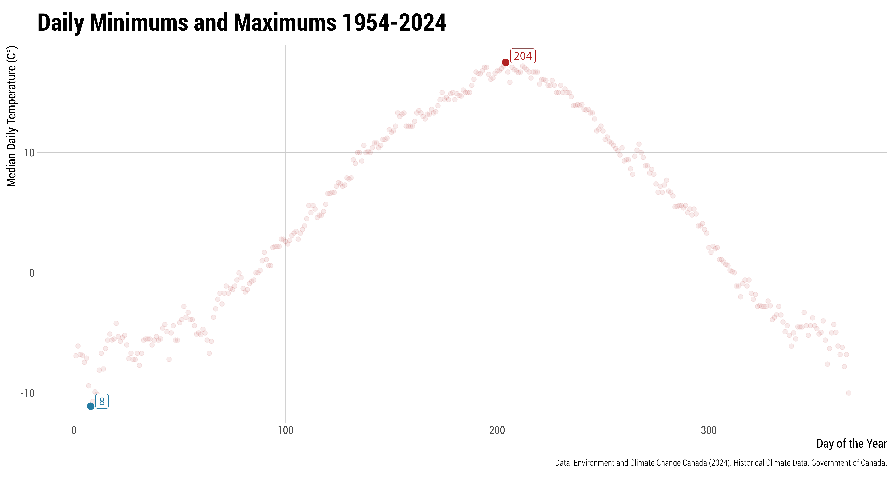

In this notebook I explore 70 years of weather data in Calgary, Canada.
Background
I am not a climate scientist… this analysis is conducted more for education than scientific inquiry. A heat spell in the summer of 2024 in Calgary, made me curious about how hot those days were compared to past years. As usual, I got carried away and took the opportunity to do more analyses, test modelling methods, illustrate the difference between prediction and explanation and, most importantly, have fun doing all of this.
Getting Weather Data
The first step is to query and download the hourly data from Environment and Climate Change Canada (ECCC) website. We do this programmatically using the convenience of the weathercan package.
Table 1: List of weather stations within 25 Km of the Calgary airport.
Notice that ECCC lists three stations at the airport: CALGARY INT’L A (1953 to 2012), CALGARY INT’L CS (2008 to today) and CALGARY INTL A (2012 to today). They all seem in proximity of the supplied coordinates.
Figure 1: Location of weather stations within a 25 Km radius of the Calgary airport.
It seems that we can query data from station ID 2205 for 1953 to 2012, and then switch to station 50430 for 2012 to today. I also did some more digging (not shown) to avoid any time overlaps between the two stations. The times reported in ECCC are Local Standard Time, that is, the local time without any daylight savings time applied1. This is good as it avoids further data cleaning.
1 We also verified this in the data.
Code
yyc_2205 <-weather_dl(station_ids =2205, start ="1953-01-01", end ="2012-07-08")yyc_50430 <-weather_dl(station_ids =50430, start ="2012-07-09", end ="2024-12-31")yyc <- yyc_2205 %>%bind_rows(yyc_50430)## Writewrite_fst(yyc, "Data/yyc-1953-2024.fst", compress =100)
There are numerous columns of data. Let’s inspect the main ones we are interested in:
Table 2: Summary statistics. The distribution of temperatures is skewed to the left suggesting that suggesting that lower temperatures are more frequent or more extreme.
Everything looks good. There are 631,152 observations and 270 (0.04%) missing temperatures. Before moving on, we generate some convenience variables that will likely be needed:
Let’s start by plotting the raw temperature data over time.
Code
# Plot 1: raw datayyc_temp %>%ggplot(aes(x = time, y = temp)) +geom_point(alpha =0.05, shape =1, size =0.1) +scale_fill_viridis_d() +scale_x_datetime(date_labels ="%Y", breaks =seq(ymd_hms("1950-01-01 00:00:00"), ymd_hms("2025-01-01 00:00:00"), by ="10 years")) +scale_y_continuous(breaks =seq(-40, 40, 20), limits =c(-40, 40)) +labs(x ="",y ="Mean Hourly Temperature (C°)",title ="Mean Hourly Temperature 1954-2024",caption ="Data: Environment and Climate Change Canada (2024). Historical Climate Data. Government of Canada.") +theme(legend.position ="none")
Figure 2: Temperatures over time. Banding is present prior to about 1978. Perhaps this is due to instrumentation limits or rounding off.
The data is very dense here (indeed, we have 631,152 observations). We can see some banding prior to around 1978. Perhaps this is due to instrumentation limitations or rounding off. I’ll put that aside for now and explore an alternative graphical representation using hexagonal binning. Let’s see.
Code
# Plot 2: raw data with hexagonal binningyyc_temp %>%ggplot(aes(x = time, y = temp)) +stat_binhex(aes(fill = Hmisc::cut2(after_stat(count), g =10)), bins =60, alpha =1) +scale_fill_viridis_d() +scale_x_datetime(date_labels ="%Y", breaks =seq(ymd_hms("1950-01-01 00:00:00"), ymd_hms("2025-01-01 00:00:00"), by ="10 years")) +scale_y_continuous(breaks =seq(-40, 40, 20), limits =c(-40, 40)) +labs(x ="",y ="Mean Hourly Temperature (C°)",title ="Mean Hourly Temperature 1954-2024",caption ="Data: Environment and Climate Change Canada (2024). Historical Climate Data. Government of Canada.") +theme(legend.position ="none")
Figure 3: Hexagonal plot of temperatures over time.
Using hexagonal binning the plot is a lot faster to render. Here, I have divided the data into deciles. The lowest decile (dark blue/purple hexagons) contains fewer observations, while the highest decile (yellow hexagons) contains the highest number of observations. We can see the bulk of observations (yellow hexagons) fall somewhere in between 0 and 18 degrees C°. While hexagonal binning allows us to see where the bulk of temperatures lies, we loose all visual aspects of seasonality and extremes. Therefore, I will revert back to plotting the raw data. Let’s now explore adding a linear trend line.
Code
yyc_temp %>%ggplot(aes(x = time, y = temp)) +geom_point(alpha =0.05, shape =1, size =0.1) +geom_quantile(quantiles =0.5, color ="#FF0066", linewidth =0.5) +scale_fill_viridis_d() +scale_x_datetime(date_labels ="%Y", breaks =seq(ymd_hms("1950-01-01 00:00:00"), ymd_hms("2025-01-01 00:00:00"), by ="10 years")) +scale_y_continuous(breaks =seq(-40, 40, 20), limits =c(-40, 40)) +labs(x ="",y ="Mean Hourly Temperature (C°)",title ="Mean Hourly Temperature 1954-2024",caption ="Data: Environment and Climate Change Canada (2024). Historical Climate Data. Government of Canada.") +theme(legend.position ="none")
Figure 4: Plot of temperatures over time with trend line superimposed.
The trend line appears flat. Nonetheless, I would not expect otherwise: if an uptrend over 70 years was going to be that noticeable to the naked eye, we would be in real trouble. Ultimately, trend lines on a graph in a slow natural processes is not a sensible way to investigate changes in temperatures. We will get back to this later.
Code
## No of times temp in 2024 has been greater than any other yeartemp <- yyc_temp %>%mutate(month =month(time)) %>%mutate(day =day(time)) %>%mutate(hour =hour(time)) %>%group_by(month, day, hour) %>%mutate(max_temp =max(temp, na.rm =TRUE),is_max =if_else(temp == max_temp, TRUE, FALSE)) %>%ungroup() %>%mutate(is_max_2024 =if_else(is_max ==TRUE& year =="2024", TRUE, FALSE))## Seasonal plot With highlighted last 3 yearstemp %>%# filter(time >= ymd_hms("2000:01:01 00:00:00")) %>% mutate(month =month(time)) %>%mutate(day =day(time)) %>%mutate(hour =hour(time)) %>%mutate(time2 =ymd_hms(paste0("2000-", as.character(month), "-", as.character(day), " ", as.character(hour), ":00:00"))) %>%# group_by(month, day, hour) %>% # mutate(temp_mean = mean(temp, na.rm = TRUE)) %>% ggplot() +geom_line(aes(time2, temp, color = year), linewidth =0.2, alpha =0.8) +geom_point(data = . %>%filter(is_max_2024 ==TRUE), aes(time2, temp), color ="#C1004D", size =2, shape =21, alpha =0.75) +gghighlight(year %in%c("2024"),use_direct_label =FALSE,unhighlighted_params =list(linewidth =0.1, colour =alpha("grey85", 0.01)) ) +scale_x_datetime(breaks ="1 month", date_labels ="%b") +scale_color_manual(values =c("#FF0066")) +scale_y_continuous() +labs(x ="",y ="Mean Hourly Temperature (C°)",title ="Mean Hourly Temperature 1954-2024",caption ="Data: Environment and Climate Change Canada (2024). Historical Climate Data. Government of Canada.") +theme(legend.position ="none") +theme(plot.subtitle =element_markdown())
Figure 5: A seasonal plot of temperatures by year, with 2024 highlighted. The circled points represent the hours when temperatures were the highest compared to any year since 1953. In total, there were 207 hours during which 2024 recorded the highest temperatures compared to any prior year since 1954, including the heat spell in the summer of 2024 that led me to this project. Of all the hours in 2024, approximately 2% were record high since 1954.
Code
## Prep datagg <- yyc_temp %>%mutate(decade =as.factor(floor(year(time) /10) *10)) %>%mutate(date_fake =update(time, year =1900)) %>%mutate(time_num =as.numeric(time)) %>%mutate(date_fake_num =as.numeric(date_fake)) %>%drop_na()## Quantile regression estimatesgg_model_10 <-rq(temp ~rcs(date_fake_num, 5) + decade, tau =0.10, data = gg)gg_model_50 <-rq(temp ~rcs(date_fake_num, 5) + decade, tau =0.50, data = gg)gg_model_90 <-rq(temp ~rcs(date_fake_num, 5) + decade, tau =0.90, data = gg)gg_model_99 <-rq(temp ~rcs(date_fake_num, 5) + decade, tau =0.99, data = gg)## Assemble predictions and calculate peaksgg <- gg %>%mutate(yhat_10 =predict(gg_model_10)) %>%mutate(yhat_50 =predict(gg_model_50)) %>%mutate(yhat_90 =predict(gg_model_90)) %>%mutate(yhat_99 =predict(gg_model_99)) %>%group_by(decade) %>%mutate(yhat_99_max =ifelse(row_number() ==which.max(yhat_99), max(yhat_99), NA)) %>%mutate(yhat_90_max =ifelse(row_number() ==which.max(yhat_90), max(yhat_90), NA)) %>%mutate(yhat_50_max =ifelse(row_number() ==which.max(yhat_50), max(yhat_50), NA)) %>%mutate(yhat_10_max =ifelse(row_number() ==which.max(yhat_10), max(yhat_10), NA)) %>%ungroup()gg <- gg %>%pivot_longer(cols =c(yhat_10, yhat_50, yhat_90, yhat_99), names_to ="yhat_type", values_to ="yhat_value") %>%pivot_longer(cols =c(yhat_99_max, yhat_90_max, yhat_50_max, yhat_10_max), names_to ="yhat_max_type",values_to ="yhat_max")gg %>%ggplot() +geom_line(aes(x = date_fake, y = temp, group = decade, color =as.numeric(year)),linewidth =0.1, alpha =0.15, show.legend =FALSE) +geom_line(aes(x = date_fake, y = yhat_value, group = yhat_type), color ="#FF0066", linewidth =0.2) +geom_label(aes(x = date_fake, y = yhat_max, label =format(round(yhat_max, 1), nsmall =1)), vjust =0.5, fill ="transparent", label.size =0.1, alpha =0.3, family ="Roboto Condensed", size =3.4) +facet_wrap(~ decade, ncol =8, labeller =as_labeller(function(decade) paste("Decade of:", decade))) +scale_x_datetime(breaks ="3 month", date_labels ="%b") +scale_y_continuous() +labs(x ="",y ="Mean Hourly Temperature (C°)",title ="Mean Hourly Temperature Changes Across the Decades 1954-2024",caption ="Data: Environment and Climate Change Canada (2024). Historical Climate Data. Government of Canada.") +theme(plot.subtitle =element_markdown())
Figure 6: A seasonal plot of temperatures by year and decade with overlayed the 10th, 50th, 90th and 99th percentile trend lines respectively. Each trend line is computed separately for each decade. The labels on top of the curves represent the temperature associated with the peak of the percentiles for a given decade (usually in mid July). Over the decades, all percentiles have increased by approximately 2°C. This is consistent with Environment and Climate Change Canada estimates of an average 2°C of warming between 1948 and 2023 for the whole of Canada.
Code
## Identify year in which max occurred:temp <- yyc_temp %>%mutate(month =month(time),day =day(time),hour =hour(time)) %>%group_by(month, day, hour) %>%mutate(max_temp =max(temp, na.rm =TRUE),is_max =if_else(temp == max_temp, TRUE, FALSE)) %>%ungroup()# To add an identifier for each yeartemp <- temp %>%group_by(year) %>%mutate(is_max_year =if_else(is_max ==TRUE, TRUE, FALSE)) %>%ungroup()# Keeping the data long rather than widetemp_long <- temp %>%select(year, month, day, hour, temp, max_temp, is_max_year) %>%arrange(month, day, hour, year)temp_long %>%group_by(year) %>%summarise(count_max_year =as.numeric(sum(is_max_year, na.rm =TRUE))) %>%mutate(max_temp_ave =mean(temp, na.rm =TRUE)) %>%mutate(year =as.numeric(as.character(year))) %>%ungroup() %>%ggplot(aes(x = year, y = count_max_year)) +geom_point(size =3.5, alpha =0.5) +geom_smooth(se =FALSE, color ="#FF0066", method = lm) +scale_y_continuous() +scale_x_continuous(breaks =seq(1954, 2024, 4)) +labs(x ="",y ="No. of hours record high",title ="",caption ="Data: Environment and Climate Change Canada (2024). Historical Climate Data. Government of Canada.") +theme(plot.subtitle =element_markdown(),legend.position ="bottom")temp %>%group_by(year) %>%summarise(gini_mean_year =GiniMd(temp, na.rm=TRUE)) %>%ungroup() %>%mutate(year =as.numeric(as.character(year))) %>%ggplot(aes(x = year, y = gini_mean_year)) +geom_point(size =3.5, alpha =0.5) +geom_smooth(se =FALSE, color ="#FF0066", method = lm) +scale_y_continuous() +scale_x_continuous(breaks =seq(1954, 2024, 4)) +labs(x ="",y ="Gini Mean Difference",title ="",caption ="Data: Environment and Climate Change Canada (2024). Historical Climate Data. Government of Canada.") +theme(plot.subtitle =element_markdown(),legend.position ="bottom")
(a) Record highs
(b) Gini mean difference
Figure 7: Left: Number of hours each year during which record-high temperatures were reached, with an overlaying trend line. In 1987, record highs occurred more often than any other year between 1954 and 2024, totaling 323 hours with the highest temperatures for the same hour across years. Right: Gini mean temperature difference for each year. This measure of dispersion is the mean absolute difference between any two temeprature (within the same year) and quantifies how much temperatures fluctuates within each year.
We see from the Gini mean difference that 1996 had the most excursions, while 1999 the lowest. Let us take a closer look at these two years:
Code
yyc_temp %>%mutate(year =year(time)) %>%filter(year %in%c(1996,1999)) %>%mutate(date_fake =ymd_hms(paste0("1900", "-",as.character(month(time)), "-",as.character(day(time)), " ",as.character(hour(time)), ":",as.character(minute(time)), ":","00" )) ) %>%mutate(year =as.factor(year)) %>%ggplot(aes(x = date_fake, y = temp, group = year, color = year)) +geom_line(alpha=0.6) +scale_color_colorblind() +scale_y_continuous() +scale_x_datetime(breaks ="2 months", date_labels ="%b") +labs(x ="",y ="Mean Hourly Temperature (C°)",color ="Year",title ="",caption ="Data: Environment and Climate Change Canada (2024). Historical Climate Data. Government of Canada.") +theme(plot.subtitle =element_markdown(),legend.position ="bottom")
Figure 8: Comparison of temperature excursions between 1996 and 1999. As indicated by the Gini mean difference, 1996 exhibits visually stronger temperature excursions compared to 1999, particularly during the months of November through April.
Part 1: Predictive Models
As an aside, in the health, social and economic sciences, the term “data-driven” can often carry a negative connotation because it implies an over-reliance on data without sufficient thought of the underlying scientific or theoretical framework, therefore, opening the door to several biases, spurious correlations and misrepresentations. These epistemological issues are not uncommon at the intersection of science and data. However, I have noticed they are more prevalent, and frequently misunderstood, in the era of AI and big data.
A sensible approach is to continuously integrate both inductive (i.e. data-driven) and deductive reasoning (i.e. based on established theories or principles). In this application, modelling the daily and annual seasonalities using a series of trigonometric functions, rather than estimating them from the data, is making use of established principles and therefore are deductive (even though, arguably, there is an inductive aspect that is estimated from the data).
Next, let’s model temperature as a function of simply time. There are two approaches we can use. One is to try and capture the long-term trends over the entire time span. To do that one way is to use natural splines in time. The other approach is to try and capture both long-term trend and short-term seasonalities by way of adding sine and cosine functions.
There are two sources of short-term seasonality:
Daily temperature excursions (nighttime is always colder than daytime)
Annual seasonal temperatures excursions (winter is always colder than summer)
Why sine and cosine? Using a periodic function makes good use of known information. Why would we want to estimate these from the data, spending degrees of freedom, when we have a known physical mechanism?
When do the highs and lows occurr?
One of the seasonal patterns we aim to capture is the daily seasonality, which refers to the cyclical fluctuations between daily highs and nightly lows. To effectively model this, we can utilize sine and cosine functions. However, we need to first understand the specific times of day and night when these temperature extremes occur so that we can shift the sine/cosine function accordingly. We can estimate these from the data:
Code
## Estimate hours after noon daily max occurs in each month from historicalyyc_temp %>%mutate(month =month(date, label =TRUE, abbr =TRUE)) %>%mutate(hour =hour(time)) %>%group_by(month, hour) %>%summarise(temp =median(temp, na.rm =TRUE)) %>%ungroup() %>%ggplot(aes(x = hour, y = temp, color = month, group = month, label = month)) +geom_point(size =2) +geom_line(linewidth =0.5) +geom_labelpath(size =4, hjust ="auto") +scale_color_manual(values = cyclic_colors) +scale_y_continuous() +labs(x ="Hour of the Days",y ="Median Hourly Temperature (C°)",color ="Month",title ="Daily Minimums and Maximums 1954-2024",caption ="Data: Environment and Climate Change Canada (2024). Historical Climate Data. Government of Canada.") +theme(plot.subtitle =element_markdown(),legend.position ="none")
Figure 9: Daily median temperatures by month and time of day.
Table 3: Daily median temperatures by month and time of day based on data from 1954 to 2024. On average, maximum temperatures occur in July at 3 PM, whereas minimum temperatures occur in January at 7 AM.
Refining the Functional Form of Sinusoidal Functions
Next, we use the information we gathered from Section 4.0.1 to phase shift these function so that they align with their respective maxima and minima. In the plots below, we examine a window of time and overlay the sine and cosine functions as-is, versus phase shifted to align with temperature daily maxima and minima. We repeat this process three times, one for each possible seasonality entertained. In some cases, I have amplified the strength of the sine/cosine functions for better visualization.
Code
## Original as-is sin/cos:yyc_small <- yyc_temp %>%filter(between(date, ymd("1970-10-01"), ymd("1970-10-02")))# Extract time components from the time columnyyc_small <- yyc_small %>%mutate(time_num =as.numeric(time),hour =as.numeric(format(time, "%H")),month =as.numeric(format(time, "%m")))# Create sine and cosine transformations for hour and month. The multiplier amplifies the function so it's easier to compareyyc_small <- yyc_small %>%mutate(sin_hour =sin(2* pi * hour /24)*10,cos_hour =cos(2* pi * hour /24)*10 )# Plot 1yyc_small %>%ggplot(aes(x = time, y = temp)) +geom_point() +geom_line(aes(x = time, y = sin_hour), color ="green") +geom_line(aes(x = time, y = cos_hour), color ="magenta") +labs(x ="",y ="Mean Hourly Temperature (C°)",caption ="Data: Environment and Climate Change Canada (2024). Historical Climate Data. Government of Canada.") +theme(plot.subtitle =element_markdown())# Shift sin hour. Assume max is at 15. Min is at 05yyc_small <- yyc_small %>%mutate(sin_hour =sin(2* pi * (hour -9) /24)*10,cos_hour =cos(2* pi * (hour -19) /24)*10 )## Plotyyc_small %>%ggplot(aes(x = time, y = temp)) +geom_point() +geom_line(aes(x = time, y = sin_hour), color ="green") +geom_line(aes(x = time, y = cos_hour), color ="magenta") +labs(x ="",y ="Mean Hourly Temperature (C°)",caption ="Data: Environment and Climate Change Canada (2024). Historical Climate Data. Government of Canada.") +theme(plot.subtitle =element_markdown())
(a) Periodic function as-is
(b) Periodic functions phase shifted
Figure 10: Left: The original sine and cosine function applied to the data with the origin set at midnight. We can observe that the maximum of the sine function (green line) does not align with the observed daily maximum temperatures. Similarly, the minimum of the cosine function (magenta) does not align with the oberved daily minimum temperatures. Right: The modified sine and cosine function applied to the data. Here, we shifted the sine and cosine functions so that their maximum and minimum align with the observed maximum and minimum temperatures. We used 3 PM and 5 AM as the daily maximum and minimum, respectively.
Code
## Test on small datasetyyc_small <- yyc %>%filter(between(date, ymd("1953-01-01"), ymd("1953-12-31"))) %>%mutate(month =as.numeric(as.factor((month(date))))) %>%mutate(hour =hour(time)) %>%mutate(year =year(date)) %>%group_by(year, month) %>%summarise(temp =median(temp, na.rm =TRUE)) %>%ungroup() %>%mutate(date =ymd(paste0(as.character(year), "-", as.character(month), "-", "01"))) %>%select(date, everything())# Extract time components from the time columnyyc_small <- yyc_small %>%mutate(month =as.numeric(format(date, "%m")))# Create sine and cosine transformations monthyyc_small <- yyc_small %>%mutate(sin_month =sin(2* pi * month /12)*10,cos_month =cos(2* pi * month /12)*10 )# Plotyyc_small %>%ggplot(aes(x = date, y = temp)) +geom_point() +geom_line(aes(x = date, y = sin_month), color ="green") +geom_line(aes(x = date, y = cos_month), color ="magenta") +labs(x ="",y ="Median Monthly Temperature (C°)",caption ="Data: Environment and Climate Change Canada (2024). Historical Climate Data. Government of Canada.") +theme(plot.subtitle =element_markdown())# Shift sin hour. Assume max is at Jul Min is at Febyyc_small <- yyc_small %>%mutate(sin_month =sin(2* pi * (month -4) /12)*10,cos_month =cos(2* pi * (month -8) /12)*10 )## Plotyyc_small %>%ggplot(aes(x = date, y = temp)) +geom_point() +geom_line(aes(x = date, y = sin_month), color ="green") +geom_line(aes(x = date, y = cos_month), color ="magenta") +labs(x ="",y ="Median Monthly Temperature (C°)",caption ="Data: Environment and Climate Change Canada (2024). Historical Climate Data. Government of Canada.") +theme(plot.subtitle =element_markdown())
(a) Periodic function as-is
(b) Periodic functions phase shifted
Figure 11: Left: the original sine and cosine function applied to the data with the origin set at midnight. We can observe that the maximum of the sine function (green line) does not align with the observed month of maximum temperatures. Similarly, the minimum of the cosine function (magenta) does not align with the oberved month of minimum temperatures. Right: the modified sine and cosine function applied to the data. Here, we shifted the sine and cosine functions so that their maximum and minimum align with the observed month in which the maximum and minimum temperatures are observed. We used July and January as the monthly maximum and minimum, respectively.
Because we may also utilize day of the year, we repeat the exercise one more time.
Code
tmp <- yyc_temp %>%mutate(doy =as.numeric(format(time, "%j"))) %>%group_by(doy) %>%summarise(temp =median(temp, na.rm =TRUE)) %>%ungroup()tmp %>%mutate(is_max =ifelse((temp ==max(tmp$temp, na.rm =TRUE)), 1, 0)) %>%mutate(is_min =ifelse((temp ==min(tmp$temp, na.rm =TRUE)), 2, 0)) %>%mutate(is_maxmin = is_max + is_min) %>%ggplot() +geom_point(aes(x = doy, y = temp, color = is_maxmin), size =3) +scale_color_viridis_d() +gghighlight(is_maxmin >0,label_key = doy,unhighlighted_params =list(size =2, colour =alpha("firebrick", 0.09))) +scale_color_gradient(low ="firebrick", high ="#257ca3") +labs(x ="Day of the Year",y ="Median Daily Temperature (C°)",color ="Day of Year",title ="Daily Minimums and Maximums 1954-2024",caption ="Data: Environment and Climate Change Canada (2024). Historical Climate Data. Government of Canada.") +theme(plot.subtitle =element_markdown(),legend.position ="none")

Figure 12: Median temperatures by day of the year. Day 204 (July 23rd in a non-leap year), tends to experience the hottest temperatures. By contrast, day 8 (January 8th), tends to experience the coldest temperatures.
Code
yyc_temp <- yyc_temp %>%select(-starts_with("sin"), -starts_with("cos"), -starts_with("yhat")) %>%mutate(time_num =as.numeric(time),hour =as.numeric(format(time, "%H")),doy =as.numeric(format(time, "%j")) )yyc_small <- yyc_temp %>%filter(between(date, ymd("1970-01-01"), ymd("1970-12-31")))# Extract time components from the time columnyyc_small <- yyc_small %>%mutate(time_num =as.numeric(time),hour =as.numeric(format(time, "%H")),month =as.numeric(format(time, "%m")))# Create sine and cosine transformations for hour and month. The multiplier amplifies the function so it's easier to compareyyc_small <- yyc_small %>%mutate(sin_doy =sin(2* pi * doy /365)*10,cos_doy =cos(2* pi * doy /365)*10 )# Plot 1yyc_small %>%ggplot(aes(x = doy, y = temp)) +geom_point(alpha =0.1) +geom_line(aes(x = doy, y = sin_doy), color ="green") +geom_line(aes(x = doy, y = cos_doy), color ="magenta") +labs(x ="",y ="Temperature (C°)",caption ="Data: Environment and Climate Change Canada (2024). Historical Climate Data. Government of Canada.") +theme(plot.subtitle =element_markdown())yyc_temp <- yyc_temp %>%select(-starts_with("sin"), -starts_with("cos"), -starts_with("yhat")) %>%mutate(time_num =as.numeric(time),hour =as.numeric(format(time, "%H")),doy =as.numeric(format(time, "%j")) )yyc_small <- yyc_temp %>%filter(between(date, ymd("1970-01-01"), ymd("1970-12-31")))# Extract time components from the time columnyyc_small <- yyc_small %>%mutate(time_num =as.numeric(time),hour =as.numeric(format(time, "%H")),month =as.numeric(format(time, "%m")))# Create sine and cosine transformations for hour and month. The multiplier amplifies the function so it's easier to compare. We use 204th day as the max for sine and 8th day as the min for cosine. Because the sine min occurs at 91 days, it follows that we need to shift the function by 204 - 91 = 113 days. For the minimum, the cosine min occurs at 182 days, it follows that we need to shift the function by 182 - 8 = 174 days.yyc_small <- yyc_small %>%mutate(sin_doy =sin(2* pi * (doy -113) /365)*10,cos_doy =cos(2* pi * (doy -174) /365)*10 )# Plot 1yyc_small %>%ggplot(aes(x = doy, y = temp)) +geom_point(alpha =0.1) +geom_line(aes(x = doy, y = sin_doy), color ="green") +geom_line(aes(x = doy, y = cos_doy), color ="magenta") +labs(x ="",y ="Temperature (C°)",caption ="Data: Environment and Climate Change Canada (2024). Historical Climate Data. Government of Canada.") +theme(plot.subtitle =element_markdown())
(a) Periodic function as-is
(b) Periodic functions phase shifted
Figure 13: Left: The original sine and cosine function applied to the data with the origin set at midnight. We can observe that the maximum of the sine function (green line) does not align with the observed maximum day of the year temperatures. Similarly, the minimum of the cosine function (magenta) does not align with the oberved minimum day of the year temperatures. Right: The modified sine and cosine function applied to the data. Here, we shifted the sine and cosine functions so that their maximum and minimum align with the observed day of the year in which the maximum and minimum temperatures are observed. We used the 204th and 8th days as the maximum and minimum, respectively.
A first model with splines
We will attempt to model both and perhaps try to simplify the model later on. The code below generates the two sets of trigonometric functions for day and month, and then fits a quantile regression model of median temperatures using a restricted cubic spline to capture the long-term trend and the two sets of trigonometric functions to capture the two short-term trends. Finally, we add the predictions back to the data. Despite only using time, this is a somewhat complex model and given the cubic polynomial of the spline, the size of the data, and the quantile regression, it takes quite some time to converge. To address that, we will only evaluate the model on 20 years of data.
The use of quantile regression is because at some point we probably want to understand characteristics associated with extremes and quantile regression provides a powerful method to do so.
Code
# Prepare subset of data (20 years)yyc_20 <- yyc_temp %>%filter(between(date, ymd("1953-01-01"), ymd("1953-01-01") +years(20)))# Extract time components from the time columnyyc_20 <- yyc_20 %>%mutate(time_num =as.numeric(time),hour =as.numeric(format(time, "%H")),month =as.numeric(format(time, "%m")))# Create sine and cosine transformations for hour and monthyyc_20 <- yyc_20 %>%mutate(sin_hour =sin(2* pi * (hour -9) /24),cos_hour =cos(2* pi * (hour -19) /24),sin_month =sin(2* pi * (month -4) /12),cos_month =cos(2* pi * (month -8) /12))# Define the transformation function. Start with an arbitrary number of knots (5)k <-attr(rcs(yyc_20 $time_num, 5), "parms")h <-function(x) { hour <-as.numeric(format(as.POSIXct(x, origin ="1970-01-01"), "%H")) month <-as.numeric(format(as.POSIXct(x, origin ="1970-01-01"), "%m"))cbind(rcspline.eval(x, k), sin_hour =sin(2* pi * (hour -9) /24), cos_hour =cos(2* pi * (hour -19) /24),sin_month =sin(2* pi * (month -4) /12),cos_month =cos(2* pi * (month -8) /12))}# Fit the quantile regression modeldd <-datadist(yyc_20); options(datadist ='dd')f1 <-Rq(temp ~gTrans(time_num, h), tau =0.50, data = yyc_20)# Predictionspred_f1 <- yyc_20 %>%mutate(yhat_50 =predict(f1, newdata = yyc_20))
Rq(formula = temp ~ gTrans(time_num, h), tau = 0.5, data = yyc_20)
Frequencies of Missing Values Due to Each Variable
temp time_num
2 0
Discrimination
Index
Obs 175342.000
g 10.6999
p 8.000
Residual d.f. 175334.000
mean |Y - Y^| 5.481
β
S.E.
t
Pr(>|t|)
Intercept
3.67
0.03
108.51
<0.0001
time_num
0.00
0.00
22.60
<0.0001
time_num'
0.00
0.00
-23.85
<0.0001
time_num''
0.00
0.00
23.46
<0.0001
sin_hour
1.55
0.03
54.64
<0.0001
cos_hour
-4.90
0.03
-171.67
<0.0001
sin_month
10.93
0.05
205.90
<0.0001
cos_month
1.62
0.05
31.03
<0.0001
Code
# AIC(model)
The performance measure \(\text{mean } |Y - \hat{Y}|\) is the mean absolute deviation (MAD) and represents the average absolute prediction error. It is conceptually similar to RMSE in other linear models. A value of 5.48 tells us that average distance between the regression line and the point is ±5 degrees C°.
\(g\) stands for \(g-index\) and represents the Gini mean difference, a measure of dispersion. A value of 10.7 suggests that the typical difference in median ambient temperatures between any two predictions is 11 degrees C°. This is useful to benchmark among multiple models. One could also compare the \(g-index\) from the model above to the Gini mean difference on the raw data which is 14. While this comparison suggests that the model underestimates the amount of variation in temperatures, it is more useful to use it as one of several measures of model comparisons.
The number of knots here (5) is rather arbitrary. We can tweak those later. Let’s visualize the results.
Code
pred_f1 %>%ggplot(aes(x = time, y = temp)) +geom_point(alpha =0.05, shape =1, size =0.5) +geom_line(aes(x = time, y = yhat_50), linewidth =0.1, alpha =1, color ="#FF0066") +scale_fill_viridis_d() +scale_x_datetime(date_labels ="%Y", breaks =seq(ymd_hms("1950-01-01 00:00:00"), ymd_hms("2025-01-01 00:00:00"), by ="5 years")) +scale_y_continuous(breaks =seq(-40, 40, 20), limits =c(-40, 40)) +labs(x ="",y ="Mean Hourly Temperature (C°)",title ="",caption ="Data: Environment and Climate Change Canada (2024). Historical Climate Data. Government of Canada.") +theme(legend.position ="none")
Figure 14: Plot of temperatures over time with superimposed predictions of median temperatures from the model.
This looks promising, but let us take a closer look at a time window to assess the adequacy of the seasonalities:
Code
pred_f1 %>%filter(between(time, ymd_hms("1965-07-01 00:00:00"), ymd_hms("1965-07-06 23:00:00"))) %>%ggplot(aes(x = time, y = temp)) +geom_point(alpha =1, shape =1, size =2.6) +geom_line(aes(x = time, y = yhat_50), linewidth =0.5, alpha =1, color ="#FF0066") +scale_fill_viridis_d() +scale_x_datetime(breaks ="12 hours", date_labels ="%b-%-d-%Y\nHour: %H") +scale_y_continuous(breaks =seq(0, 30, 5), limits =c(0, 30)) +labs(x ="",y ="Mean Hourly Temperature (C°)",title ="",caption ="Data: Environment and Climate Change Canada (2024). Historical Climate Data. Government of Canada.") +theme(legend.position ="none")
Figure 15: Plot of temperatures over time with superimposed predictions of median temperatures from the model. Focusing in on a smaller time window to assess seasonalities.
The daily seasonality appears adequate. Let us now look at the annual seasonality:
Code
pred_f1 %>%filter(between(time, ymd_hms("1965-01-01 00:00:00"), ymd_hms("1966-12-31 23:00:00"))) %>%ggplot(aes(x = time, y = temp)) +geom_point(alpha =0.1, shape =1, size =1.2) +geom_line(aes(x = time, y = yhat_50), linewidth =0.1, alpha =1, color ="#FF0066") +scale_fill_viridis_d() +scale_x_datetime(breaks ="1 month", date_labels ="%b\n%Y") +scale_y_continuous() +labs(x ="",y ="Mean Hourly Temperature (C°)",title ="Mean Hourly Temperature 1954-2024",caption ="Data: Environment and Climate Change Canada (2024). Historical Climate Data. Government of Canada.") +coord_cartesian(expand =FALSE) +theme(legend.position ="none") +theme(plot.subtitle =element_markdown())
Figure 16: Plot of temperatures over time with superimposed predictions of median temperatures from the model. Focusing in on a smaller time window to assess seasonalities.
Not great… The annual seasonality appear irregular because we used categorical months, causing abrupt transitions from one month to the next. Although this method captures the annual seasonality, it doesn’t reflect the smooth changes of a natural system. To address this, we evaluate using days instead in the next section.
A second model with splines
We now try to smooth the monthly seasonality.
Code
# Ensure data has the necessary columnsyyc_20 <- yyc_20 %>%select(-starts_with("sin"), -starts_with("cos")) %>%mutate(time_num =as.numeric(time),hour =as.numeric(format(time, "%H")),doy =as.numeric(format(time, "%j")) )# Create sine and cosine transformations for hour and day of the yearyyc_20 <- yyc_20 %>%mutate(sin_hour =sin(2* pi * (hour -9) /24),cos_hour =cos(2* pi * (hour -19) /24),sin_doy =sin(2* pi * (doy -113) /365),cos_doy =cos(2* pi * (doy -174) /365))# Define the transformation functionk <-attr(rcs(yyc_20$time_num, 5), "parms")h <-function(x) { hour <-as.numeric(format(as.POSIXct(x, origin ="1970-01-01"), "%H")) doy <-as.numeric(format(as.POSIXct(x, origin ="1970-01-01"), "%j"))cbind(rcspline.eval(x, k), sin_hour =sin(2* pi * (hour -9) /24), cos_hour =cos(2* pi * (hour -19) /24),sin_doy =sin(2* pi * (doy -113) /365),cos_doy =cos(2* pi * (doy -174) /365))}# Fit the quantile regression modeldd <-datadist(yyc_20); options(datadist ='dd')f2 <-Rq(temp ~gTrans(time_num, h), tau =0.50, data = yyc_20)# Predictionspred_f2 <- yyc_20 %>%mutate(yhat_50 =predict(f2, newdata = yyc_20))
Code
pred_f2 %>%filter(between(time, ymd_hms("1965-01-01 00:00:00"), ymd_hms("1966-12-31 23:00:00"))) %>%ggplot(aes(x = time, y = temp)) +geom_point(alpha =0.1, shape =1, size =1.2) +geom_line(aes(x = time, y = yhat_50), linewidth =0.1, alpha =1, color ="#FF0066") +scale_fill_viridis_d() +scale_x_datetime(breaks ="1 month", date_labels ="%b\n%Y") +scale_y_continuous() +labs(x ="",y ="Mean Hourly Temperature (C°)",title ="",caption ="Data: Environment and Climate Change Canada (2024). Historical Climate Data. Government of Canada.") +coord_cartesian(expand =FALSE) +theme(legend.position ="none") +theme(plot.subtitle =element_markdown())
Figure 17: Plot of temperatures over time with superimposed predictions of median temperatures from the model. Here the focus is on a time window (2020 to 2020) to assess the adequacy of the annual seasonality.
Much better. We now have what seems like a reasonable model at face value. Now, let’s tweak the model by revisiting the number of knots. When using splines, unless we have a strong prior knowledge to do otherwise, knots are ideally placed at quantile distribution of the data (see Harrell2, Stone3).
2 Harrell, F. E. (2013). Regression modelling strategies: With applications to linear models, logistic regression, and survival analysis. Springer Science & Business Media.
3 Stone, C. J. (1986). [Generalized additive models]: Comment. Statistical Science, 1(3). https://doi.org/10.1214/ss/1177013607
An example of custom knot placement is when one knows of a physical change occurring at a precise location. For instance, in physics you might place a knot at the location of a physical state transition like when going from liquid to solid. Another example in a quasi-experiment is to place the knot at the time of an intervention.
4 Logistic regression diagnostics when predictors all have skewed distributions. (n.d.). Cross Validated. https://stats.stackexchange.com/questions/67078/logistic-regression-diagnostics-when-predictors-all-have-skewed-distributions
But what about the number? In most of the literature, it is common to see 3 to 7 knots. However, in our case we have a lot of data and with time variables, is not uncommon to utilize more knots. One rule of thumb I seem to recall is to have ~5 knots per “era”. It’s hard to think of “era” in climate data with a mere 70 years of data. A data-driven strategy is to let AIC guide the number of knots4.
In the next section, I will evaluate the optimal number of knots. For convenience, instead of using the computationally intensive quantile regression, I will use an ordinary least square. For knots increments, since we are dealing with sexagesimal data, let us start with 12 and increment by 6 or 12.
Code
## Not sure parallelizing helps:library(parallel)num_cores <-detectCores() -1## Create an empty data frame to store the resultsresults_1 <-data.frame(i =numeric(),AIC =numeric(),adj_r_squared =numeric(),g =numeric())## Loop through sequence of knots and fit the model. Continue on if no convergence for some of the k's.## i = sequence of knots## k = vector of knot locations, each i## Use ols for speed instead of the computationally intensive Rqfor (i inseq(12, 120, 12)) { k <-attr(rcs(yyc_temp$time_num, i), "parms") h <-function(x) { hour <-as.numeric(format(as.POSIXct(x, origin ="1970-01-01"), "%H")) doy <-as.numeric(format(as.POSIXct(x, origin ="1970-01-01"), "%j"))cbind(rcspline.eval(x, k), sin_hour =sin(2* pi * (hour -9) /24), cos_hour =cos(2* pi * (hour -19) /24),sin_doy =sin(2* pi * doy /365),cos_doy =cos(2* pi * doy /365)) }tryCatch({ f <-ols(temp ~gTrans(time_num, h), data = yyc_temp) aic_value <-AIC(f) adj_r_squared <- f$stats['adjR2'] g <- f$stats['g'] # Append the results to the data frame results_1 <-rbind(results_1, data.frame(i = i, AIC = aic_value, adj_r_squared = adj_r_squared, g = g)) }, error =function(e) {# Print a message and continue to the next iteration if an error occursmessage(paste("Model did not converge for i = ", i)) })}
Code
results_1 %>%bind_rows(results_2, results_3) %>%ggplot(aes(y = AIC, x = i)) +geom_point(shape =1, size =1.6) +geom_line() +labs(x ="Number of knots",y ="AIC (lower is better)",title ="Optimal Number of Knots for Long-Term Trend")
For completeness, I also evaluated the fit from a quantile GAM. The results are not shown because it was nearly identical to the spline approach. After all, the two approaches are conceptually very similar, both relying on smoothing splines.
The above approach of using AIC to determine the ideal number of knots seems to be a dead end. The dataset is huge and so is the number of knots needed to minimize AIC and my machine runs out of memory at approximately 300 knots. Besides, I would not feel comfortable assigning so many degrees of freedom to a long term trend of a mere 70 years. After all, I am trying to capture the long term trend and we don’t need wiggleness. I decide to stop here.
Residuals Analysis
Next, let’s take a look at the residuals. While quantile regression does not impose stringent assumptions like some linear regression, examination of residuals can still provide valuable insight on understanding and improving the model.
## Plot of residuals over timegg1 <- pred_f2 %>%filter(between(time, ymd_hms("1965-07-01 00:00:00"), ymd_hms("1965:09:01 00:00:00"))) %>%ggplot(aes(x = time, y = residuals)) +geom_point(alpha =0.1, shape =1, size =1.2) +geom_smooth(aes(x = time, y = residuals), se =FALSE, linewidth =0.7, alpha =1, color ="#00b7ec") +scale_x_datetime(breaks ="1 week", date_labels ="%b %d\n%Y") +scale_y_continuous() +labs(x ="",y ="Residuals of Predicted Median Temperature (C°)",title ="Residuals of Predicted Median Temperature 1954-2024") +coord_cartesian(expand =FALSE) +theme(legend.position ="none") +theme(plot.subtitle =element_markdown())## Autocorrelation of residualsgg2 <- pred_f2 %>% tsibble::as_tsibble(index = time) %>% tsibble::fill_gaps(.full =TRUE) %>% feasts::ACF(residuals, lag_max =1440) %>% feasts::autoplot() +ggtitle("ACF of Residuals") +scale_x_continuous(breaks =seq(0, 1440, by =24*7)) gg3 <- pred_f2 %>% tsibble::as_tsibble(index = time) %>% tsibble::fill_gaps(.full =TRUE) %>% feasts::PACF(residuals, lag_max =1440) %>% feasts::autoplot() +ggtitle("PACF of Residuals") +scale_x_continuous(breaks =seq(0, 1440, by =24*7)) ## Assemble graphsgg1 / (gg2 | gg3)## If running into problems# gc()# gc(reset = TRUE)# dev.off()
Figure 18: Plot of residuals diagnostic. The residual plot over time (top graph) show some problems with seasonality that are unexplained by the model, although with a mean of 0. The ACF and PACF are more problematic as they signal lack of i.i.d.
The diagnostic is not great. While the residual plot roughly wraps around the zero mean, there clearly are unexplained seasonalities. The ACF reveals significant autocorrelation lasting approximately 2 weeks (336 hours). The PACF reveals similar problems.
A third model with splines and lag terms
Let’s now explore adding lag terms. It always feels like cheating to add lags of the response, though this is not too different than fitting an autoregressive model. This is a good opportunity to highlight the different objectives in modelling: prediction versus inference.
So far, I have aimed to fit a model that captures both short-term seasonal patterns and long-term trends, focusing on improving predictive accuracy. I have no interest in making predictions about the future. Simultaneously, I have been mindful of aspects of the models that ensure valid inference, such as addressing heteroskedasticity and ensuring the independence and identical distribution (i.i.d.) of the response and residuals (even though some of those assumptions are relaxed in quantile regression). Incidentally, addressing those things also helped improving predictive accuracy.
When I refer to inference, I mean it in its traditional sense: the process of drawing conclusions about a population from a sample. This contrasts with the more prediction-focused bend of the term often seen in machine learning community. Ultimately, my goal is to develop a reasonably good model that can serve as a foundation for making inferences about changes in temperatures over the past 70 years.
I also do something else, not shown below. Separately, I evaluated all lags in increments of 3 from 3 to 48 and then used the LASSO to help identify which lags were more important. These were (in order) lag 3, 24, 27, 6 and 45. While I do not like using LASSO for variable selection, I think it’s ok to use in this context.
Lastly, I take the opportunity to reign-in the number of knots for the long-term trend.
Figure 19: Plot of residuals diagnostic. The ACF and PACF have improved considerably with the inclusion of lags, though they still display some autocorrelation issues.
Also much batter, though still short of ideal. Finally, let’s take a look at the predictions:
Code
pred_f3 %>%filter(between(time, ymd_hms("1960-01-01 00:00:00"), ymd_hms("1961-12-31 23:00:00"))) %>%ggplot(aes(x = time, y = temp)) +geom_point(alpha =0.1, shape =1, size =1.2) +geom_line(aes(x = time, y = yhat_50), linewidth =0.1, alpha =1, color ="#FF0066") +scale_fill_viridis_d() +scale_x_datetime(breaks ="1 month", date_labels ="%b\n%Y") +scale_y_continuous() +labs(x ="",y ="Mean Hourly Temperature (C°)",title ="Mean Hourly Temperature 1954-2024",caption ="Data: Environment and Climate Change Canada (2024). Historical Climate Data. Government of Canada.") +coord_cartesian(expand =FALSE) +theme(legend.position ="none") +theme(plot.subtitle =element_markdown())
Figure 20: Plot of predictions showing improved fit.
Code
pred_f3 %>%filter(between(time, ymd_hms("1965-07-01 00:00:00"), ymd_hms("1965-07-07 23:00:00"))) %>%ggplot(aes(x = time, y = temp)) +geom_point(alpha =0.75, shape =1, size =3.5) +geom_line(aes(x = time, y = yhat_50), linewidth =0.9, alpha =0.6, color ="#FF0066") +geom_line(aes(x = time, y = yhat_90), linewidth =0.5, alpha =0.4, color ="#00cc7a") +geom_line(aes(x = time, y = yhat_10), linewidth =0.5, alpha =0.4, color ="#7a00cc") +scale_fill_viridis_d() +scale_x_datetime(breaks ="2 days", date_labels ="%b, %d\n%Y") +scale_y_continuous() +labs(x ="",y ="Mean Hourly Temperature (C°)",title ="Mean Hourly Temperature 1954-2024",caption ="Data: Environment and Climate Change Canada (2024). Historical Climate Data. Government of Canada.") +coord_cartesian(expand =FALSE) +theme(legend.position ="none") +theme(plot.subtitle =element_markdown())
Figure 21: Plot of predictions showing improved and additional 10th and 90th percentiles.
Prediction look visibly improved. However, this may be a good model for prediction, but not a great model for inference because it’s too data driven. If the model explains almost all of the variability in the response, it may not leave room for estimating uncertainty. Inferential statistics often relies on variability to make inferences about population parameters, and a perfect model can obscure this variability.
Summary of Predictive Models
In the sections above, I attempted to fit a reasonable predictive model that may also serve for inferential purposes. Ultimately though, what makes a powerful predictive model is the inclusion of lags which will hurt inference and interpretation. Surely, one could continue improving these models further.
I would refer to the work of Laurinec or Simpson, both of whom illustrate the use of GAMs in handling seasonal patterns and complex relationships within data. Their approaches are in the same philosophy of this post, since they provide a good trade-off between predictive strength, sound statistical properties and interpretability (besides being a lot less computationally intensive than data hungry models like neural networks!).
Part 2: Inferential Models
In part 1, I attempted to fit a reasonable model of hourly temperatures that tried to capture short and long-term trends. In this section I want to focus on making inference about temperatures changes over the years. Why inference? Because inferential methods “are the building blocks for drawing conclusions using models and data”5. Once again I want to stress that when I refer to inference, I mean it in its traditional sense: the process of drawing conclusions about a population from a sample, rather than the more prediction-focused bend of the term often seen in machine learning community6.
5 Faraway, Julian J. Linear Models with R, 2009.
6 Do we want to explain or do we want to predict? I always have this question at the back of my mind whenever I see a SHAP plot or other local explainability methods paired with a highly predictive ML model. These explanatory step could be misleading both for the practitioner and the reader if one is not careful how the model is framed since they could hide important relationships.
It pays to pause here and reflect about the intent before proceeding further.
The main objective in this section is to understand changes in temperature over the last 70 years. We are not interested in perfectly predicting or even forecasting temperatures. This may come as a surprise to some, but having a really good purely predictive model, like the one developed with time lags, could be harmful for explanatory tasks, including (and especially) for inference. This is why, accustomed to do inference, I wrote earlier that using time lags feels like “cheating”. In my head, I am already thinking about inference, not prediction, and having lags will inevitably explain most of the changes in temperatures without really telling us much about how temperatures have evolved over the years.
Think of it this way: we can predict one’s body temperature with extreme accuracy if only we were to use that person’s temperature one minute prior. But that lag, will inevitably mask anything we want to understand about the circadian rhythm. The inclusion of lags could be great for some prediction tasks but it’s generally a poor choice for statistical inference7.
7 Related to adding lags because they improve predictive accuracy, Kuhn and Johnson (2013) underscore the idea that feature selection is a poor method for determining the most significant variables in the data, as opposed to which predictors most influenced the model (p.509). To assess which predictors have individual association with the outcome, common classical statistical methods are far more appropriate. While the authors talk about feature selection, feature importance and local explanations are all very much related ideas.
In the case of lags of temperatures, this is in some areas referred to as simultaneity because we have the same or part of the same quantity on both hand sides of the equation (i.e. both as a dependent and as an independent variable).
An unpublished paper by Christopher Achen makes a compelling argument against using lags of the response in explanatory modelling. In particular, Achen writes:
Lagged response variables have no obvious causal interpretation.
They tend to improve fit dramatically and with statistically significant coefficients.
Many of the remaining substantive coefficients collapse to implausibly small and insignificant values, occasionally taking on the wrong sign leading to inaccurate inference.
Obeying the logic of including lagged response variables, researchers sometimes talk themselves into accepting outlandish regression.
Achen’s paper, together with a more recent landmark paper by Efron8, as well as several discussion on statistics fora, helps me articulate with even more confidence what I have been repeating like a broken record: we need to have the goal of the modelling clear - do we want to explain or predict?
8 See: Efron, Bradley. “Prediction, Estimation, and Attribution. International Statistical Review 88, no. S1 (2020): S28–59. This paper further explores the difference between prediction and inference (or more precisely, a type of inference called attribution):”evidently there are a great many genes weakly correlated with prostate cancer, which can be combined in different combinations to give near-perfect predictions. This is an advantage if prediction is the only goal, but a disadvantage as far as attribution is concerned. Traditional methods of attribution operate differently, striving as in Table 1 to identify a small set of causal covariates (even if strict causality cannot be inferred)“..
While any reference worth its salt will underscore these concepts, in my experience they seem to remain elusive in the daily practice of the data science and machine learning communities.
Simulating the Effect of Lags on Inference
Code
# Take a subset of the data to avoid significant p-values for trivially small effect size caused by huge datasetset.seed(321)sim <- yyc_temp %>%filter(between(date, ymd("1970-01-01"), ymd("1970-12-31"))) %>%drop_na() %>%mutate(simulated =0.05* temp +rnorm(n(), sd =5))# Check correlation# round(cor(sim$temp, sim$simulated, method = "spearman", use = "complete.obs"), 2)
To do a demonstration of the damaging effect of lags on inference, let us simulate a variable, call it simulated, that is weakly correlated to temperatures. We aim for a Spearman correlation of about 0.10 (the actual from simulated data is 0.11). We also take a 1-year subset of the data to avoid trivially small effects being significant, a side effect of a huge dataset (new dataset size n=8760. Notice that this is still a very big dataset).
## Print model with lagsoptions(prType ="html")# anova(f_sim, digits = 2)print(f_sim, coefs =TRUE, title ="Model with lags")## Print model no lagsoptions(prType ="html")# anova(f_no_lags, digits = 2)print(f_no_lags, coefs =TRUE, title ="Model without lags")
Min 1Q Median 3Q Max
-15.29342 -1.62018 -0.08236 1.54457 13.12690
β
S.E.
t
Pr(>|t|)
Intercept
0.0525
0.0579
0.91
0.3645
simulated
0.0094
0.0058
1.63
0.1022
time_num
0.0000
0.0000
-0.22
0.8254
temp_lag_3
1.0133
0.0095
106.19
<0.0001
temp_lag_6
-0.1716
0.0088
-19.53
<0.0001
temp_lag_24
0.4429
0.0100
44.24
<0.0001
temp_lag_27
-0.4142
0.0096
-43.36
<0.0001
temp_lag_45
0.1163
0.0052
22.42
<0.0001
(a) Table of coefficient and performance for the model using lags. The model uses a simulated variable weakly associated with temperatures. Notice the somewhat large standard error and the non-significant p-value for the simulated variable. The fit of the model is high with an R2 of 0.96.
Model without lags
ols(formula = temp ~ simulated + time_num, data = sim)
Model Likelihood Ratio Test
Discrimination Indexes
Obs 8715
LR χ2 183.78
R2 0.021
σ 12.7906
d.f. 2
R2adj 0.021
d.f. 8712
Pr(>χ2) 0.0000
g 2.116
Residuals
Min 1Q Median 3Q Max
-40.5069 -7.2276 0.6132 9.3244 31.0185
β
S.E.
t
Pr(>|t|)
Intercept
1.3005
0.2762
4.71
<0.0001
simulated
0.2881
0.0273
10.55
<0.0001
time_num
0.0000
0.0000
8.61
<0.0001
(b) Table of coefficient and performance for the model without lags. The model uses a simulated variable weakly associated with temperatures. Compared to Table 8 (a), the standard error became 10 times smaller compared to its coefficient and the p-value is highly significant. The fit of the model is low with an R2 of 0.02, as it would be expected from a weakly correlated predictor.
Table 4
Let’s examine the three key points raised in the Achen paper in the context of these models:
Lagged response variables have no obvious causal interpretation. This is self explanatory: while lagged variables are valuable for forecasting and capturing temporal dependencies, they rarely imply causality. Using the body temperature analogy: while a person’s temperature at a given time is correlated with their temperature a few minutes earlier, the circadian rhythm itself does not cause the next minute’s state merely by its past condition.
They tend to improve fit dramatically and with statistically significant coefficients. We can see that the R2 for the model with no lags is 0.02 (Table 8 (b)). When we add the lag terms the R2 becomes 0.96 (Table 8 (a)) and all lag terms are significant (p-value < 0.0001). Indeed, a dramatic improvement.
Many of the remaining substantive coefficients collapse to implausibly small and insignificant values, occasionally taking on the wrong sign leading to inaccurate inference. The coefficient for the simulated variable for the model with no lags is 0.2881 and its p-value is <0.0001 (Table 8 (b)). When we add the lag terms the coefficient becomes 30 times smaller at 0.0094 and its p-value is non significant at 0.1022 (Table 8 (a)).
This simulation clearly illustrates how incorporating a set of highly predictive lagged features can lead to a model with impressive predictive accuracy. However, it comes at the cost of interpretability, as it complicates our ability to “identify a small set of causal covariates”. Indeed, to use Achen’s terminology, if one is interested in inference and explanations, the model with the lag terms is outlandish.
This trade-off highlights a fundamental principle in statistical modelling — the distinction between prediction and inference: do we aim to predict or explain? Again, I refer to Efron’s paper9 for more as well as Shmueli10.
9 See: Efron, Bradley. “Prediction, Estimation, and Attribution. International Statistical Review 88, no. S1 (2020): S28–59. This paper further explores the difference between prediction and inference (or more precisely, a type of inference called attribution):”evidently there are a great many genes weakly correlated with prostate cancer, which can be combined in different combinations to give near-perfect predictions. This is an advantage if prediction is the only goal, but a disadvantage as far as attribution is concerned. Traditional methods of attribution operate differently, striving as in Table 1 to identify a small set of causal covariates (even if strict causality cannot be inferred)“..
10 Shmueli, Galit. “To Explain or to Predict?” Statistical Science 25, no. 3 (August 2010): 289–310.
What About xAI?
The distinction between explanation and prediction does not vanish simply because we alter the approach. In the field of explainable AI (xAI)11, machine learning models generate predictions, but their internal decision-making processes often remain opaque. To address this, post-hoc explanation methods such as SHAP values (Shapley Additive Explanations) and LIME (Local Interpretable Model-agnostic Explanations) are applied to explain how these models arrive at their conclusions.
12 Researchers have developed techniques to introduce uncertainty measures into ML models, namely, quantile predictions and, more recently, conformal predictions. While conformal prediction is a promising methods, ML models remain fundamentally black-box predictors compared to traditional statistical approaches that explicitly quantify uncertainty.
One key difference in machine learning is the absence of the inferential machinery that both frequentist and Bayesian statistical approaches provide. As a result, we cannot properly formulate formal conclusions in the same way that frequentist and Bayesian inference allows. More precisely, in machine learning we lack the ability to quantify uncertainty in our findings12.
Code
# Take a subset of the dataset.seed(321)sim <- yyc_temp %>%drop_na() %>%mutate(simulated =0.05* temp +rnorm(n(), sd =5))sim <- sim %>%mutate(time_num =as.numeric(time),hour =as.numeric(format(time, "%H")),doy =as.numeric(format(time, "%j")) )# Generate lags as beforesim <- sim %>%mutate(temp_lag_3 =lag(temp, 3),temp_lag_6 =lag(temp, 6),temp_lag_24 =lag(temp, 24),temp_lag_27 =lag(temp, 27),temp_lag_45 =lag(temp, 45), )## Remove NAssim <- sim %>%drop_na()## Librarieslibrary(tidymodels)library(ranger)library(treeshap)library(shapviz)library(kernelshap)## Data splitset.seed(123)data_split <-initial_split(sim, prop =0.8)train_data <-training(data_split)test_data <-testing(data_split)## Model reciperf_model <-rand_forest(mode ="regression",trees =tune(),mtry =3,min_n =tune()) %>%set_engine("ranger",num.threads = parallel::detectCores() -1)rf_recipe <-recipe(temp ~ time_num + simulated + temp_lag_3 + temp_lag_6 + temp_lag_24 + temp_lag_27 + temp_lag_45, data = train_data)## Assemble workflowrf_workflow <-workflow() %>%add_model(rf_model) %>%add_recipe(rf_recipe)## Tuning parametersrf_grid <-grid_regular(trees(range =c(100, 120)), #do 100-200min_n(range =c(10, 12)),levels =2)set.seed(123)rf_res <-tune_grid( rf_workflow,resamples =bootstraps(train_data, times =10),grid = rf_grid,metrics =metric_set(rmse))# Select best parameters & prepare final workflowbest_params <-select_best(rf_res)final_rf_workflow <-finalize_workflow(rf_workflow, best_params)# Fit chosen model:rf_fit <-fit(final_rf_workflow, data = train_data)##SHAPset.seed(123)xvars <-c("time_num", "simulated", "temp_lag_3", "temp_lag_6", "temp_lag_24", "temp_lag_27", "temp_lag_45")X_explain <- train_data[sample(1:nrow(train_data), 1000), xvars]X_background <- train_data[sample(1:nrow(train_data), 200), ]## About 45minshap_values <-permshap(rf_fit, X = X_explain, bg_X = X_background)shap_values <-shapviz(shap_values)## Save resultssaveRDS(shap_values, file ="posts/2024-07-28-yyc-temperatures/Data/shap_values.rds")saveRDS(rf_fit, file ="posts/2024-07-28-yyc-temperatures/Data/rf_fit.rds", compress ="xz")
Figure 22: SHAP importance plots for the a random forest model on the hourly data that includes lags of temperature and a simulated variable weakly correlated with temperatures. Notice the low importance of the simulated variable.
One can see that the SHAP importance for the simulated variable is the lowest of any feature. Just like with the model in Table 8 (a), fooled by the impressive accuracy of the random forest model, practitioners may be inclined to throw away the simulated variable altogether as uninformative. If the goal is to understand, we just lost the opportunity to do so.
Interaction
I expect that an interaction between month and year is sensible. In other words, I would expect that some months experience higher temperature changes over the years than other months. We call this an interaction, whereby the effect of year on temperature depends on the month. Before we fit models with interactions, let’s explore visually whether the data supports this.
ols(formula = temp_mean ~ year * month, data = yyc_monthly, x = TRUE,
y = TRUE)
Model Likelihood
Ratio Test
Discrimination
Indexes
Obs 864
LR χ2 2040.63
R2 0.906
σ 2.92
d.f. 23
R2adj 0.903
d.f. 840
Pr(>χ2) 0.0000
g 10.230
Residuals
Min 1Q Median 3Q Max
-13.87 -1.52 0.07 1.72 9.21
Table 5: Table of model fitting metrics.
Code
(an <-anova(f1))
Analysis of Variance for temp_mean
d.f.
Partial SS
MS
F
P
year (Factor+Higher Order Factors)
12
532.4892
44.374099
5.19
<0.0001
All Interactions
11
243.2190
22.110821
2.59
0.0031
month (Factor+Higher Order Factors)
22
68700.5477
3122.752168
365.40
<0.0001
All Interactions
11
243.2190
22.110821
2.59
0.0031
year × month (Factor+Higher Order Factors)
11
243.2190
22.110821
2.59
0.0031
REGRESSION
23
68989.8179
2999.557298
350.99
<0.0001
ERROR
840
7178.6555
8.546018
Table 6: ANOVA table
Code
set.seed(123)val <-validate(f1, B =500)html(val)
Index
Original
Sample
Training
Sample
Test
Sample
Optimism
Corrected
Index
Successful
Resamples
R2
0.9058
0.908
0.903
0.0049
0.9008
500
MSE
8.3086
8.1163
8.5474
-0.431
8.7397
500
g
10.2296
10.2418
10.2191
0.0227
10.2069
500
Intercept
0
0
0.015
-0.015
0.015
500
Slope
1
1
0.9974
0.0026
0.9974
500
Table 7: Table of model validation metrics based on the optimism bootstrap. Optimism bootstrap allows us to use the whole data for estimation and avoid splitting the data into training and testing13 . The bootstrap is then used to adjust the naive estimate of model accuracy. Here, the amount of optimism negligible for any of the metrics. It should not come as a surprise that there is no overfitting because the ratio sample size to the number of candidate variables is very large.
Figure 24: Left: zero mean errors and constant variance checks. The errors are visibly heteroskedastic with cold months showing much more variation than warm months. Right: quantile-quantile plot for normality of errors.
Let’s look at the output:
From Table 5, the R2 is 0.9. This means that 90% of the changes in monthly temperatures between 1954 and 2024 are explained by this model 14.
From Table 5, the likelihood ratio \(\chi^2\) is 2041 and the p-value associated with it is <0.001. The test statistic tells us that at least one of the coefficients in the model is significantly different from 0 and, therefore, that overall the model is useful.
From Table 5, \(g\) stands for \(g-index\) and represents the Gini mean difference, a measure of dispersion 15. A value of 10.2 suggests that the typical difference in mean monthly temperatures between any two predictions is 10 degrees C°. This is useful to benchmark among multiple models. One could also compare the \(g-index\) from the model above to the Gini mean difference on the raw data which is 11.
The AIC (Akaike information creterion - not shown) is 4331. This metric could be used to benchmark across multiple models. Provided all the regression assumptions are met, minimizing AIC is asymptotically equivalent to minimize MSE via leave-one-out cross-validation.
From Table 6, the model has an interaction between year and month. In other words, we are allowing the effect of month on temperature to vary by year. Doing so allows one to explore the possibility that temperature increases over the years may be experienced in some months more than others. From the ANOVA table, we see that with a p-value of 0.003, overall this interaction is statistically significant.
The year variable is treated as a continuous variable. Its coefficient (not shown) tells us that every one year increment is associated with an increase in temperatures of 0.1. This may appear small, but over 70 years it is: 70 * 0.1 = 7 16. The p-value associated with the year coefficient is not significant at the 5% level, but it is at a more liberal 10%.
Moving on to the diagnostic plot (Figure 24), while the error are not overly problematic (QQ plot on the right), we do seem to have a problem with the constant variance assumption: colder temperatures have a higher variance than warmer temperatures and this is quite evident in the graph. We therefore need to either utilize some form of robust standard errors or use a different regression method. For now, I will use a type of robust standard errors called Newey-West17. This is a type heteroskedasticity and autocorrelation consistent (HAC) covariance estimation.
From the validation table in Table 7 there is no signs of overfitting or regression to the mean.
14 There is little value in reporting the R2 statistic for a test set to assess overfitting because we are only using 23 degrees of freedom with a sample size of 864. Even though the sample size is large relative to the number of predictors, I feel it’s more sensible to utilize the whole data for estimation purposes. To assess how the model generalizes to unseen data, the optimism bootstrap will be utilized.
15 The Gini mean difference is significantly more interpretable than, say, standard deviation and does not require to choose a measure of central tendency (the standard deviation require one to use the mean). Besides being a robust measure, the Gini mean difference is 0.98 as efficient as the standard deviation if the distribution were Gaussian.
16 One aspect worth highlighting is that since we have a model with a significant interaction, evaluating this main effect is of limited interest (because we can evaluate the effect of year on temperatures for each month individually). This is in the same ballpark as what we observed in Figure 6.
17 See: Newey WK, West KD (1994). “Automatic Lag Selection in Covariance Matrix Estimation.” Review of Economic Studies, 61, 631–653 and Zeileis, A. (2004). Econometric Computing with HC and HAC Covariance Matrix Estimators. Journal of Statistical Software, 11(10), 1–17.
Using Robust Standard Errors
Let us now apply the heteroskedasticity and autocorrelation consistent (HAC) standard errors using the Newey-West method and compare the results side by side:
(a) Table of regression coefficients using the conventional covariance estimator.
term
estimate
std.error
statistic
p.value
(Intercept)
-216.37
45.11
-4.80
0.000
year
0.10
0.02
4.64
0.000
monthFeb
190.16
69.44
2.74
0.006
monthMar
146.71
58.66
2.50
0.012
monthApr
165.51
48.83
3.39
0.001
monthMay
191.40
48.08
3.98
0.000
monthJun
200.89
43.63
4.60
0.000
monthJul
184.12
46.25
3.98
0.000
monthAug
181.70
45.43
4.00
0.000
monthSep
158.96
49.96
3.18
0.001
monthOct
235.61
51.03
4.62
0.000
monthNov
166.29
63.61
2.61
0.009
monthDec
162.37
72.85
2.23
0.026
year:monthFeb
-0.09
0.03
-2.71
0.007
year:monthMar
-0.07
0.03
-2.41
0.016
year:monthApr
-0.08
0.02
-3.15
0.002
year:monthMay
-0.09
0.02
-3.61
0.000
year:monthJun
-0.09
0.02
-4.11
0.000
year:monthJul
-0.08
0.02
-3.45
0.001
year:monthAug
-0.08
0.02
-3.48
0.000
year:monthSep
-0.07
0.03
-2.81
0.005
year:monthOct
-0.11
0.03
-4.37
0.000
year:monthNov
-0.08
0.03
-2.53
0.011
year:monthDec
-0.08
0.04
-2.21
0.027
(b) Table of regression coefficients using the Newey-West covariance estimator. While the differences appear small and the conclusion hardly change, it’s easier to appreciate the difference through a partial effect like the one in Figure 27.
Table 8
Code
## Compute Newey-West covrobust_cov <-vcovHAC(f2, type ="NeweyWest")robust_anova <-Anova(f2, vcov = robust_cov, type =3)## ANOVAoptions(contrasts =c("contr.sum", "contr.poly"))kable(broom::tidy(Anova(f2, vcov = robust_cov, type =3)), digits =c(0, 0, 2, 3))options(contrasts =c("contr.treatment", "contr.poly"))
term
df
statistic
p.value
(Intercept)
1
22.33
0.000
year
1
20.87
0.000
month
11
2.21
0.012
year:month
11
1.94
0.031
Residuals
840
NA
NA
Table 9: ANOVA table using the Newey-West robust standard errors. The ANOVA table shows the significance of the month x year interaction term. Because this interaction is significant, the main effects are of limited interest.
Influential Years-Months
Next let’s take a look at influential observations. We first plot the Cook’s distance, followed by the DFBETAS. Cook’s distance is arguably slightly more suitable for predictions, whereas DFBETAS are more sutiable for explanatory modelling18. Nonetheless, the two approaches should give very similar results.
# Prepare the data frame with Cook's Distance and combine it with the original datasetcooks_d <-cooks.distance(f2)threshold <-0.01# threshold <- 4/(nrow(yyc_monthly) - (nrow(yyc_monthly) - df.residual(f2) - 1) - 1)cooks <- yyc_monthly %>%mutate(Observation =row_number(),Cooks_Distance =cooks.distance(f2),Influential = cooks_d > threshold)# Plotcooks %>%ggplot(aes(x = Observation, y = Cooks_Distance)) +geom_hline(yintercept =0.01, linetype ="dashed", color ="firebrick2") +geom_point(aes(color = Influential), size =2, show.legend =FALSE, alpha =0.8) +geom_text_repel(data = cooks %>%filter(Influential),aes(label =paste(year, month, sep =" ")),hjust =-0.3, vjust =-0.3, family ="Roboto Condensed", size =3.4) +scale_color_manual(values =c("TRUE"="firebrick3", "FALSE"="grey60")) +labs(title ="Cook's Distance",x ="Observation",y ="Cook's Distance",caption ="Data: Environment and Climate Change Canada (2024). Historical Climate Data. Government of Canada.") +coord_cartesian(expand =TRUE)
Figure 25: Plot of Cook’s distance. Cook’s Distance evaluates how much individual data points impact the overall regression model. Specifically, it is the product of two components: the first reflects the degree of outlyingness, and the second accounts for leverage (i.e. the extent to which an observation can affect a prediction). Points with higher values indicate a greater impact on the model’s coefficients and predictions. The treshold value of 0.01 is arbitrary as there is no consensus on what constitutes a sensible cutoff. All of the ifluential observations are in the cold months which is expected given cold months have the most variation (see Figure 24). However, they largely occurred in the 1955-1965 decade.
Captured in Calgary on May 16, 2023 at 10 AM, the temperature at the time was around 16°C — an unusual month according to the DFBETAS influence statistics — this photo highlights smoke from forest fires which occurred earlier than usual that year.
Code
## Influential observationsw <-which.influence(f1_hc3, cutoff =0.20)## Only keep the interaction (because main effect are just repetitions of same influential obs)w <- w[4]nam <-names(w)inf <- yyc_monthly %>%select(date, temp_mean)# Initialize an empty list to store results for each iterationresults_list <-list()# Loop through and store the resultsfor (i in1:length(nam)) { influential_obs <- inf[w[[i]], ] influential_obs$effect <- nam[i] results_list[[i]] <- influential_obs}# Combine all the results into a single data frametmp1 <-do.call(rbind, results_list) %>%mutate(across(where(is.numeric), ~round(., digits =0))) %>%mutate(YearMonth =yearmonth(date)) %>%mutate(month =as.character(month(date, label =TRUE, abbr =TRUE))) %>%select(-effect, -date) %>%select(YearMonth, everything())# Term of comaprisons (average temperature in eahc month, regardless of year)tmp2 <- yyc_monthly %>%group_by(month) %>%summarise(month_mean =round(mean(temp_mean, na.rm =TRUE), 0)) %>%ungroup() %>%mutate(month =as.character(month))# Mergetmp1 %>%left_join(tmp2, by ="month") %>%select(-month) %>%select(`Year/Month`= YearMonth,`Mean C°`= temp_mean,`Typical C° in Month`= month_mean) %>%kable() %>%kable_styling(bootstrap_options =c("striped", "hover", "responsive"), full_width = F)
Year/Month
Mean C°
Typical C° in Month
1954 Apr
-4
4
1954 Jan
-19
-8
1954 Nov
4
-2
1955 Dec
-14
-7
1955 Jan
-6
-8
1955 Nov
-13
-2
1958 Jan
-2
-8
1961 Jan
-3
-8
1964 Dec
-17
-7
1966 Jan
-18
-8
1969 Jan
-24
-8
2019 Feb
-18
-6
2021 Dec
-12
-7
2023 Dec
1
-7
2023 May
15
10
2024 Jan
-9
-8
Table 10: Table of unusual months identified by the model, alongside the average monthly temperature across all years (e.g., the mean temperature for all Januarys, Februarys, etc., over the 70-year dataset) for comparison. These are based on the DFBETAS statistic with a cutoff of 0.20.
Revisiting the Interaction
Now that we have the model, let us take another look at the shape of the interaction between month and year, this time estimating it from the model and focusing on the months of December and January.
Code
Predict(f1_hc3, year, month =c("Dec", "Jan")) %>%ungroup() %>%as.data.frame() %>%ggplot(aes(x = year, y = yhat, color = month)) +geom_line(linewidth =1.3) +geom_ribbon(aes(ymin = lower, ymax=upper, fill = month), alpha =0.2, color =NA, show.legend =FALSE) +labs(title ="",x ="",y ="Predicted Mean Hourly Temperature (C°)",color ="",caption ="Data: Environment and Climate Change Canada (2024). Historical Climate Data. Government of Canada.") +coord_cartesian(expand =TRUE)
Figure 26: Interaction plot between month and year, focusing on January and December. The plot illustrates that the effect of year on temperature varies by month, with evidence suggesting a faster rate of temperature increase over the years in January compared to December or any other month (global test of interaction: p-value=0.03).
Partial Effect Plot
Code
## The following creates a partial effect plot with both conventional and Newey-West s.e. to illustrate the differences visuallyyhat <-Predict(f1,year =c(1960, 1970, 1980, 1990, 2000, 2010, 2020),month =c("Jan", "Feb", "Mar", "Apr", "May", "Jun", "Jul", "Aug", "Sep", "Oct", "Nov", "Dec")) %>%ungroup() %>%as.data.frame() %>%select(-yhat, -lower, -upper)## Apply Newey-West robust s.e.yhat <- yhat %>%mutate(fit =predict(f2, newdata = yhat),model_mat =model.matrix(f2, newdata = yhat)[1:n(), ],se_nw =sapply(1:n(), function(i) sqrt(as.numeric(model_mat[i, ] %*%NeweyWest(f2, prewhite =FALSE) %*% model_mat[i, ]))),lower_ci_nw = fit -qnorm(0.975) * se_nw,upper_ci_nw = fit +qnorm(0.975) * se_nw ) %>%select(-model_mat, -starts_with("se"))## For comparison, calculate conventional s.e.:yhat_conv <-Predict(f1,year =c(1960, 1970, 1980, 1990, 2000, 2010, 2020),month =c("Jan", "Feb", "Mar", "Apr", "May", "Jun", "Jul", "Aug", "Sep", "Oct", "Nov", "Dec")) %>%ungroup() %>%as.data.frame() %>%select(-yhat)## Merge two s.e. types into single dataframe:yhat <- yhat %>%full_join(yhat_conv, by =c("year", "month"))## Make it long for graphing purposes:yhat_long <- yhat %>%pivot_longer(cols =c(lower_ci_nw, upper_ci_nw, lower, upper),names_to =c(".value", "type"),names_pattern ="(lower|upper)(_ci_nw|)" ) %>%mutate(type =case_when(type =="_ci_nw"~"Newey-West", type ==""~"Conventional"))## Animation graph:animation <- yhat_long %>%ggplot(aes(x = fit, y = month, color =as.factor(year))) +geom_point(position =position_dodge(width =0.8), size =2.5, alpha =1) +geom_linerange(aes(xmin = lower, xmax = upper), position =position_dodge(width =0.8), linewidth =0.75) +scale_color_viridis_d(option ="B", end =0.9) +transition_states(type,transition_length =0.10,state_length =0.5) +scale_color_viridis_d(option ="B", end =0.9) +scale_x_continuous(limits =c(-20, 20)) +labs(x ="Predicted Mean Monthly Temperature (C°)",y ="",color ="",title ="Partial Effect Plot",subtitle ='Type of standard errors: {closest_state}',caption ="Data: Environment and Climate Change Canada (2024). Historical Climate Data. Government of Canada.") +coord_cartesian(expand =FALSE) +theme(legend.position ="right") +theme(plot.subtitle =element_markdown())## Assemble animation.## N.B. width, height and res are not specified inside animate because they will be inherited via chunk options. There is a bug in the linux implenetation of magick resulting in an error when renderer magick is used.animate(animation,dev ="ragg_png",bg ="transparent",bitsize =16,renderer =gifski_renderer(), fps =30, duration =6)
Figure 27: Partial effect plot of monthly temperatures at the beginning of each decade with 95% confidence intervals. For illustrative purposes, both conventional and Newey-West robust standard errors are presented, with the Newey-West intervals being the appropriate method.
Using Permutation Tests
Permutation tests allow us to test the effect of a variable without relying on the normality of error and other assumptions. Suppose that we have a single mean temperature for every year. Moreover, suppose that year has no systematic effect on temperature. That is, any observed trend in temperature is due to chance variation. Then, if the hypothesis holds, randomly re-assigning temperatures to years should not change the results.
We can do this by generating all permutation (n! = 864!), compute the F statistic for each, and see the proportion exceeding the observed F statistic. If this proportion is small, then we reject the hypothesis that temperatures are unrelated to year in favour of the hypothesis that temperatures are related to year19.
20 I’ve only shown the p-value in the presence of an interaction, however, models without the interaction which were run but not shown in this analysis support this.
In reality, there is limited value to performing a permutation test for this particular application: the p-value for the main effect of year using two types of robust standard errors are both highly significant20.
If, on the other hand, the p-value for an additive model of temperatures on month and year were close to a decision boundary, and as we saw, frequentist assumptions do not hold, then a permutation test would be justified.
Code
## Manually:# lmod <- lm(temp_mean ~ year + month, data = yyc_monthly)# lms <- summary(lmod)# lms$fstatistic# 1 - pf(lms$fstatistic[1], lms$fstatistic[2], lms$fstatistic[3])# nreps <- 1000# set.seed(123)# fstats <- numeric(nreps)# for(i in 1:nreps){# lmods <- lm(sample(temp_mean) ~ year + month, yyc_monthly)# fstats[i] <- summary(lmods)$fstat[1]# }# mean(fstats > lms$fstat[1])## Using library lmPerm. Suppress messagesinvisible(capture.output(perm <- lmPerm::lmp(temp_mean ~ year*month, data = yyc_monthly, perm ="Prob")))summary_perm <-summary(perm)tidy_df <-data.frame(Term =rownames(summary_perm$coefficients),Estimate = summary_perm$coefficients[, "Estimate"],Iterations = summary_perm$coefficients[, "Iter"],p.value = summary_perm$coefficients[, "Pr(Prob)"])# Print nicelytidy_df %>%kable(digits =c(0, 2, 0, 4), row.names =FALSE) %>%kable_styling(bootstrap_options =c("striped", "hover", "responsive"))# Anova - insanely hard way to make it into a tableoptions(contrasts =c("contr.sum", "contr.poly"))anova_text <-capture.output(anova(perm))anova_clean <- anova_text[str_detect(anova_text, "^[A-Za-z0-9]")]anova_list <-str_split_fixed(anova_clean, "\\s{2,}", 6)anova_df <-as.data.frame(anova_list, stringsAsFactors =FALSE)colnames(anova_df) <-c("Term", "Df", "R Sum Sq", "R Mean Sq", "x1", "x2")anova_df <- anova_df %>%separate(`R Mean Sq`, into =c("R Mean Sq", "Pr(Prob)"), sep ="<") %>%separate(`R Mean Sq`, into =c("R Mean Sq", "Iter"), sep =" ") %>%select(Term, df=Df, `R Sum Sq`, `R Mean Sq`, Iter, `Pr(Prob)`) %>%mutate(df =as.numeric(df)) %>%mutate(`R Sum Sq`=as.numeric(`R Sum Sq`)) %>%mutate(`R Mean Sq`=as.numeric(`R Mean Sq`)) %>%mutate(Iter =as.numeric(Iter)) %>%mutate(`Pr(Prob)`=str_replace(`Pr(Prob)`, "([0-9\\.e-]+)\\s*\\*+", "<\\1")) %>%drop_na(df)# Print with kable for a clean table formatkable(anova_df, digits =3) %>%kable_styling(bootstrap_options =c("striped", "hover", "responsive"))options(contrasts =c("contr.treatment", "contr.poly"))
Term
Estimate
Iterations
p.value
(Intercept)
4.30
5000
0.0000
year
0.03
5000
0.0000
month1
-12.63
5000
0.0000
month2
-10.45
5000
0.0000
month3
-6.73
5000
0.0000
month4
-0.26
5000
0.0000
month5
5.74
5000
0.0000
month6
9.80
5000
0.0000
month7
12.62
5000
0.0000
month8
11.66
5000
0.0000
month9
6.79
5000
0.0000
month10
1.06
5000
0.0000
month11
-6.56
5000
0.0000
year:month1
0.08
5000
0.0000
year:month2
-0.02
5000
0.0000
year:month3
0.01
51
0.6667
year:month4
0.00
51
1.0000
year:month5
-0.01
5000
0.0048
year:month6
-0.01
5000
0.0024
year:month7
0.00
5000
0.0026
year:month8
0.00
56
0.6429
year:month9
0.01
51
1.0000
year:month10
-0.03
5000
0.0000
year:month11
0.00
51
1.0000
Term
df
R Sum Sq
R Mean Sq
Iter
Pr(Prob)
year
1
289
289.3
5000
<2.2e-16
month
11
68457
6223.4
5000
<2.2e-16
year:month
11
243
22.1
5000
<2.2e-16
Residuals
840
7179
8.5
NA
NA
Table 11: Table of regression coefficients using a permutation test with an ANOVA table at the bottom. The ‘Iter’ columns show the number of iterations required to meet the stopping rule. The stopping rule is reached when the estimated standard deviation falls below 0.1 of the estimated p-value.
As we can see from the ANOVA table in Table 11, the conclusions do not change. In fact, the evidence supporting an interaction is even stronger here.
Summary of Inferential Model 1
I am not a climate scientist, and this analysis is conducted more for education than scientific inquiry. Therefore, the conclusions drawn from these data should be interpreted as exploratory and illustrative. If these data were analyzed by experts in climate science with the same results, then, the following is an example of the type of conclusions we may reach.
There is evidence that the effect of year on temperatures depends on month. In particular, the temperature increase in January is higher compared to other months, suggesting an accelerating warming trend during certain months of the year (global test of interaction p-value = 0.031). Future analyses may want to focus on how colder temperatures have evolved over the years.
The coefficient for year associated with the month of January as estimated through an ordinary least square model with robust standard error in which year is treated linearly is 0.10°C (90% CI: 0.07, 0.14). This means that, on average, temperatures each January rise by 0.10°C. While this effect size may appear small, it becomes important when considered over decades. For example, over 50 years, the average temperature in January increased by approximately 5°C (0.10 × 50).
By contrast, the coefficient for year associated with the month of July is 0.02°C (95% CI: -0.05, 0.1). This means that, on average, temperatures each July rise by 0.02°C. Over the span of 50 years, the average temperature in July increased by approximately 1°C.
The p-value associated with year is <0.001, which is below the conventional significance threshold of 0.05. This indicates that the effect of year is statistically significant at the 5% level. In layman’s terms, the data is consistent with the hypothesis of an increase in temperature. Said another way, the observed trend is unlikely to be due to random chance under the assumptions of the model.
The use of a permutation test leads to the same conclusions.
We observed several unusual cold snaps especially in the two decades of 1950-1970. More recently, the years 2018 to 2023 have also experienced unusually cold temperatures in some months.
Inferential Model 2
In the first inferential model, the variance of the residual was heavily heteroskedastic and we addressed this by utilizing the Newey-West robust standard errors. We now try a more complex semi-parametric modelling approach that makes no assumption about the distribution of the residuals: the proportional odd ordinal regression model, a type of cumulative probability model212223. As the name implies, ordinal models work on the ranks of the observations, which enables us to treat the resulting inference in a manner that is somewhat similar to logistic regression. Key advantages of ordinal models are:
22 See: Harrell, Frank E. Regression Modeling Strategies: With Applications to Linear Models, Logistic and Ordinal Regression, and Survival Analysis. Springer Series in Statistics. Springer International Publishing, 2015.
23 See: Liu, Qi, Bryan E. Shepherd, Chun Li, and Frank E. Harrell. “Modeling Continuous Response Variables Using Ordinal Regression: Modeling Continuous Response Variables Using Ordinal Regression.” Statistics in Medicine 36, no. 27 (November 30, 2017): 4316–35.
Robust to extremes: Regression coefficient estimates are not affected by extreme values of the response variable.
No assumptions about distribution shape: The model encodes the empirical cumulative distribution in the intercepts, allowing the response distribution to be continuous, discontinuous, clumped, bimodal, or have flooring/ceiling effects.
Transformation preserving: Applying transformation to the response variable does not affect regression coefficient estimates.
Handling flooring and ceiling effects: Naturally accommodates clumping around zero (flooring), upper limits of detection (ceiling), or similar constraints.
Express probabilities naturally: Enables direct probabilistic interpretations, such as exceedance probabilities.
Robust to model misspecifications: General assessments of effects are not compromised by model misspecifications.
Figure 28: A Guide To Odds Ratios: What They Are and How To Communicate Them Clearly by David Spiegelhalter
The main critical assumption for an ordinal model il the proportional odd assumption. If the assumption is met, we would expect parallelism in the logit-transformed cumulative distributions.
Figure 29: Checking the proportional odds assumption. Parallelism of the logit-transformed cumulative distributions indicate good alignment with the assumption of the proportional odds model.
Logistic (Proportional Odds) Ordinal Regression Model
orm(formula = temp_mean ~ year * month, data = yyc_monthly, x = TRUE,
y = TRUE, scale = FALSE, maxit = 24)
Model Likelihood
Ratio Test
Discrimination
Indexes
Rank Discrim.
Indexes
Obs 864
LR χ2 2122.58
R2 0.914
ρ 0.949
ESS 864
d.f. 23
R223,864 0.912
Dxy 0.801
Distinct Y 864
Pr(>χ2) <0.0001
R223,864 0.912
Y0.5 4.824577
Score χ2 1734.32
|Pr(Y ≥ median)-½| 0.436
max |∂log L/∂β| 1×10-9
Pr(>χ2) <0.0001
Table 12: Table of the ordinal regression model fitting metrics.
Code
options(prType ="html")(an <-anova(f1, test ='LR'))
Likelihood Ratio Statistics for temp_mean
χ2
d.f.
P
year (Factor+Higher Order Factors)
60.41
12
<0.0001
All Interactions
18.73
11
0.0660
month (Factor+Higher Order Factors)
2119.73
22
<0.0001
All Interactions
18.73
11
0.0660
year × month (Factor+Higher Order Factors)
18.73
11
0.0660
TOTAL
2122.58
23
<0.0001
Table 13: ANOVA table from the ordinal regression model. We use the more powerful likelihood ratio test.
Code
set.seed(123)val <-validate(f1, B =300)html(val)
Index
Original
Sample
Training
Sample
Test
Sample
Optimism
Corrected
Index
Successful
Resamples
ρ
0.9494
0.9506
0.948
0.0025
0.9468
300
Dxy
0.8014
0.8048
0.7986
0.0063
0.7952
300
R2
0.9143
0.9166
0.912
0.0046
0.9097
300
Slope
1
1
0.9606
0.0394
0.9606
300
g
8.121
8.3009
7.9697
0.3312
7.7898
300
Mean |Pr(Y≥Y0.5)-0.5|
0.4365
0.439
0.4362
0.0027
0.4337
300
Table 14: Table of model validation metrics based on the optimism bootstrap. Optimism bootstrap24 allows us to use the whole data for estimation and avoid splitting the data into training and testing. The bootstrap is then used to adjust the naive estimate of model accuracy. Here, the amount of optimism is negligible for any of the metrics. It should not come as a surprise that there is no overfitting because the ratio sample size to the number of candidate variables is very large.
The are three R2 in the output in Table 12 (called pseudo R2). This is because there is no consensus among researchers on a single way to calculate it. Frank Harrell suggests using an R2 method that adjusts for ties. In the output above this is 0.912 (this is the third R2 - the two identical R2 imply there are no ties in the data as also reported in “Distinct Y”). This means that 91% of the changes in monthly temperatures between 1954 and 2024 are explained by this model.
The likelihood ratio \(\chi^2\) in Table 12 is 2123 and the p-value associated with it is <0.001. The test statistic tells us that at least one of the coefficients in the model is significantly different from 0 and, therefore, that overall the model is useful. Therefore, the model as a whole fits significantly better than an empty model.
From Table 12, |Pr(Y>=median)-0.5| = 0.436 is a measure of discriminative ability. If the model has no predictive power, the predicted probability for Y being greater than or equal to the median will be around 0.5.
From Table 12, the Spearman’s ρ rank correlation between the linear predictor and Y is 0.949. Similarly, Somer’s \(D_{xy}\) is 0.801 and is also a measure of predictive discrimination which is related to concordance.
From Table 13 we see a significant year effect, but slightly weaker evidence of an interaction effect between year and month compared to the ordinary least square model (Table 9).
As before, the model validation that uses the optimism bootstrap in Table 14 do not reveal any concern with respect to overfitting or regression to the mean.
Odds Ratios
Let’s now examine the model output to better illustrate how the ordinal model works. Below, we print the first 10 intercepts from the model (printing all intercepts would result in printing all temperatures since there are no ties):
Logistic (Proportional Odds) Ordinal Regression Model
orm(formula = temp_mean ~ year * month, data = yyc_monthly, x = TRUE,
y = TRUE, scale = FALSE, maxit = 24)
Model Likelihood
Ratio Test
Discrimination
Indexes
Rank Discrim.
Indexes
Obs 864
LR χ2 2122.58
R2 0.914
ρ 0.949
ESS 864
d.f. 23
R223,864 0.912
Dxy 0.801
Distinct Y 864
Pr(>χ2) <0.0001
R223,864 0.912
Y0.5 4.824577
Score χ2 1734.32
|Pr(Y ≥ median)-½| 0.436
max |∂log L/∂β| 1×10-9
Pr(>χ2) <0.0001
β
S.E.
Wald Z
Pr(>|Z|)
y≥-19.0607527
-72.954
19.674
-3.71
0.0002
y≥-18.4053763
-73.665
19.666
-3.75
0.0002
y≥-17.9940476
-74.087
19.666
-3.77
0.0002
y≥-17.9126344
-74.385
19.666
-3.78
0.0002
y≥-16.6938172
-74.618
19.666
-3.79
0.0001
y≥-16.6897321
-74.810
19.667
-3.80
0.0001
y≥-16.3107527
-74.972
19.667
-3.81
0.0001
y≥-15.6049731
-75.112
19.667
-3.82
0.0001
y≥-15.0422043
-75.236
19.668
-3.83
0.0001
y≥-14.9356183
-75.347
19.668
-3.83
0.0001
…
Table 15: First 10 intercepts from the ordinal regression model.
The tenth intercept y>=-14.9356183 corresponds with the logit of Y (that is, mean monthly temperature) being at or above the -14.9 C° (i.e. as warm or warmer than -14.9 C°). The estimated β in this case is the logit of the empirical cumulative distribution function while holding month and year at their reference values of January and year zero, respectively. Because year zero is not very meaningful and the logit, while being useful mathematically, is not intuitive for direct interpretation, let’s evaluate the odds ratio for a 20 years increase from 2004 to 2024 in the month of January.
Code
## Referent month is already Januaryoptions(prType ="html")summary(f1, year =c(2004, 2024), est.all =FALSE)summary(f1, year =c(1974, 2024), est.all =FALSE)# k <- contrast(f1, list(year = 2004), list(year = 2024), conf.type='profile')# print(k, fun=exp)
Effects Response: temp_mean
Low
High
Δ
Effect
S.E.
Lower 0.95
Upper 0.95
year
2004
2024
20
0.7855
0.198
0.3974
1.174
Odds Ratio
2004
2024
20
2.1940
1.4880
3.234
Effects Response: temp_mean
Low
High
Δ
Effect
S.E.
Lower 0.95
Upper 0.95
year
1974
2024
50
1.964
0.4951
0.9936
2.934
Odds Ratio
1974
2024
50
7.127
2.7010
18.810
Table 16: These effect estimates represent the change in odds over two span of time. A 20-year increase from 2004 to 2024 results in the odds of observing higher temperatures increasing by a factor of 2.2 (95% CI: 1.5, 3.2). Over a 50-year span from 1974 to 2024, the odds rise by a factor of 7.1 (95% CI: 2.7, 18.8).
Looking at the top of Table 16, we can say that the odds of January temperatures being as high or higher in 2024 increase by a factor of 2.2 compared to 2004 across any threshold of temperature. Because the 95% confidence interval ranges from 1.5 to 3.2, we can be 95% confident that the true estimate lies within this range. Furthermore, since the null value of 1 is not included in this range, this odds ratio is considered to be statistically significant at the 5% level.
By threshold of temperature we mean that by the proportional odds assumption, this odds ratio remains the same across all possible cutoffs of temperatures. Moreover, these odds ratios are over and above the effect of month of the year.
Mean and Percentiles
One of the many benefits of using an ordinal model is that since we have interval data, we can express changes in mean temperatures or even percentiles. Below I produce a partial effect plot of mean monthly temperatures similar to the one in Figure 27:
Code
Predict(f1, year =seq(1960, 2020, 10), month, fun = M) %>%as.data.frame() %>%ungroup() %>%mutate(year =as.factor(year)) %>%ggplot(aes(x = yhat, y = month, color = year)) +geom_point(position =position_dodge(width =0.8), size =2.5, alpha =1) +geom_linerange(aes(xmin = lower, xmax = upper), position =position_dodge(width =0.8), linewidth =0.75) +scale_color_viridis_d(option ="B", end =0.9) +scale_x_continuous(limits =c(-20, 20)) +labs(x ="Predicted Mean Monthly Temperature (C°)",y ="",color ="",title ="",caption ="Data: Environment and Climate Change Canada (2024). Historical Climate Data. Government of Canada.") +theme(legend.position ="right") +theme(plot.subtitle =element_markdown())
Figure 30: Partial effect plot of predicted mean monthly temperatures at the beginning of each decade with 95% confidence intervals from an ordinal regression model.
And similarly, we can do the same with the key percentiles. Notice that the confidence intervals are appropriately wider when estimating sample quantiles.
Code
pp50 <-Predict(f1, year =seq(1960, 2020, 10), month, fun = p50) %>%as.data.frame() %>%ungroup() %>%mutate(percentile ="50")pp5 <-Predict(f1, year =seq(1960, 2020, 10), month, fun = p5) %>%as.data.frame() %>%ungroup() %>%mutate(percentile ="5")pp95 <-Predict(f1, year =seq(1960, 2020, 10), month, fun = p95) %>%as.data.frame() %>%ungroup() %>%mutate(percentile ="95")pp_all <- pp50 %>%bind_rows(pp5) %>%bind_rows(pp95)animation2 <- pp_all %>%mutate(year =as.factor(year)) %>%ggplot(aes(x = yhat, y = month, color = year)) +geom_point(position =position_dodge(width =0.8), size =2.5, alpha =1) +geom_linerange(aes(xmin = lower, xmax = upper), position =position_dodge(width =0.8), linewidth =0.75) +transition_states(percentile,transition_length =0.10,state_length =0.5) +scale_color_viridis_d(option ="B", end =0.9) +scale_x_continuous(limits =c(-25, 25)) +labs(x ="Predicted Median Monthly Temperature (C°)",y ="",color ="",title ="",caption ="Data: Environment and Climate Change Canada (2024). Historical Climate Data. Government of Canada.") +theme(legend.position ="right") +theme(plot.subtitle =element_markdown())## Assemble animation.## N.B. width, height and res are not specified inside animate because they will be inherited via chunk options. There is a bug in the linux implenetation of magick resulting in an error when renderer magick is used.animate(animation2,dev ="ragg_png",bg ="transparent",bitsize =16,renderer =gifski_renderer(), fps =30, duration =6)
Figure 31: Partial effect plot animation of predicted 5th, 50th, 95th percentile monthly temperatures at the beginning of each decade with 95% confidence intervals from an ordinal regression model.
Exceedance Probabilities
While odds ratios are mathematically and statistically powerful, they can be difficult to interpret—unless you’re a seasoned gambler. In contrast, exceedance probabilities provide a more intuitive and effective way to quantify the likelihood of a given month-year combination.
In the plots below, we evaluate the exeedance probabilities at the beginning of each decade separately for each month.
Code
## Create new dataframe for model predictions:newdata <-data.frame(expand.grid(month =factor(c("Jan", "Feb", "Mar", "Apr", "May", "Jun", "Jul", "Aug", "Sep", "Oct", "Nov", "Dec"), levels =c("Jan", "Feb", "Mar", "Apr", "May", "Jun", "Jul", "Aug", "Sep", "Oct", "Nov", "Dec")),year =seq(1960, 2020, by =10)))## Create the function, predict d <-ExProb(f1)lp <-predict(f1, newdata = newdata)w <-d(lp)## Cleanup and add lost info:exprob.yyc <- w[["prob"]] %>%as_tibble() %>%mutate(year =as.factor(c(rep(1960, 12), rep(1970, 12), rep(1980, 12), rep(1990, 12), rep(2000, 12), rep(2010, 12), rep(2020, 12)))) %>%mutate(month =rep(factor(c("Jan", "Feb", "Mar", "Apr", "May", "Jun", "Jul", "Aug", "Sep", "Oct", "Nov", "Dec"), levels =c("Jan", "Feb", "Mar", "Apr", "May", "Jun", "Jul", "Aug", "Sep", "Oct", "Nov", "Dec")), 7)) %>%select(year, month, everything()) %>%select(-contains("V")) %>%pivot_longer(cols =starts_with("Prob"), names_to ="temp", values_to ="prob") %>%mutate(temp =parse_number(temp))## Plot data:exprob.yyc %>%## Filter# filter(month == "Jan") %>%ggplot(aes(x = temp, y = prob, color = year, label = year)) +geom_line(linewidth =0.5) +geom_labelpath(size =2.4, hjust =0.4, rich =TRUE) +facet_wrap(vars(month), scales ="free", ncol =4) +scale_color_colorblind(expand =TRUE, drop =TRUE) +scale_y_continuous(labels = scales::percent_format()) +labs(x ="Monthly Temperature (C°)",y ="P[Y\u2265y] (probability of a given temperature or warmer)",color ="",caption ="Data: Environment and Climate Change Canada (2024). Historical Climate Data. Government of Canada.") +theme(legend.position ="bottom") +theme(axis.title =element_markdown()) +theme(panel.grid.minor =element_blank()) +theme(plot.margin =unit(c(1, 0, 0, 0), "cm")) +guides(color =guide_legend(nrow =1))
Figure 32: Exceedance probabilities for combinations of year-month from a proportional odds cumulative probability model.
Because these plots are quite dense, let’s focus on the month of January:
Code
## Interactive graph via plotly:library(plotly)gg <- exprob.yyc %>%## Filterfilter(month %in%c("Jan")) %>%mutate(tooltip_temp =round(temp, 0),tooltip_prob =paste0(as.character(round(prob*100, 0)), "%")) %>%mutate(`Temperature C°`=paste0(" ", tooltip_temp, "\nP[Temperature \u2265 ", tooltip_temp, "]: ", tooltip_prob, "\nYear: ", year)) %>%ggplot(aes(x = temp, y = prob, color = year, label =`Temperature C°`)) +geom_line(linewidth =0.6) +scale_color_colorblind(expand =TRUE, drop =TRUE) +scale_y_continuous(labels = scales::percent_format()) +coord_cartesian(xlim =c(-20, 10), expand =TRUE) +labs(x ="Monthly Temperature (C°)",y ="P[Y\u2265y] (probability of a given temperature or warmer)",color ="",caption ="Data: Environment and Climate Change Canada (2024). Historical Climate Data. Government of Canada.") +theme(legend.position ="bottom") +theme(axis.title =element_markdown()) +theme(panel.grid.minor =element_blank()) +theme(plot.margin =unit(c(1, 0, 0, 0), "cm")) +guides(color =guide_legend(nrow =1))ggplotly(gg, tooltip =c("label"))
Figure 33: Exceedance probabilities for combinations of year-month from a proportional odds cumulative probability model. The month of January is shown.
As an example, let’s evaluate the exeedance probabilities of a set of temperatures and month:
The probability of average January temperatures as warm or warmer than -10 C° was 35% in 1960 and jumped to 85% in 2020.
Uncertainty Communication with Natural Frequencies
Numerous empirical studies across social, clinical, and climate research indicate that natural frequencies are more effective in communicating uncertainty, as they are more intuitively understood by broader audiences.2526 Below we translate the example interpretation into natural frequencies:
In 1960, a -10°C or warmer January happened about 35 times per 100 years27.
By 2020, the frequency jumped to 85 times per 100 years.
27 The idea behind “35 times per 100 years” is simply saying that, on average, if we had 100 years of data just like 1960, we’d expect 35 years in which January reached an average temperature of -10°C or warmer.
26 Gigerenzer, G. (2014). Risk savvy: How to make good decisions. Penguin.
25 Ahmed, Haroon, Gurudutt Naik, Hannah Willoughby, and Adrian G. K. Edwards. “Communicating Risk.” BMJ 344 (June 18, 2012): e3996.
Faraway, J. J. (2016). Linear models with R. CRC Press.
Fasiolo, M., Wood, S. N., Zaffran, M., Nedellec, R., & Goude, Y. (2021). qgam: Bayesian nonparametric quantile regression modeling in R. Journal of Statistical Software, 100(9), 1–31.
Gigerenzer, G. (2014). Risk savvy: How to make good decisions. Penguin.
Harrell, F. E. (2013). Regression modeling strategies: With applications to linear models, logistic regression, and survival analysis. Springer Science & Business Media.
Liu, Q., Shepherd, B. E., Li, C., & Harrell, F. E. (2017). Modeling continuous response variables using ordinal regression. Statistics in Medicine, 36(27), 4316–4335.
The table outlines any use of artificial intelligence in this project. We restrict the definition of AI to mean any generative AI technology, such as large language models (LLM’s) or other algorithms that generate text, images, or data based on a prompt.
AI Transparency Dimension
Answer
Notes
Has any text been generated using AI?
No
The text has not been generated using AI; it was created manually.
Has any text been improved or corrected using AI?
Yes
Parts of the text were improved using an AI system to enhance grammar, flow, and style, in order to increase clarity.
Has any image, illustration or audio been generated or modified using AI?
No
No images, illustrations, or audio have been generated or modified using AI.
Has any analysis code been generated using AI?
No
No analysis code has been generated using AI.
Has any analysis code been improved or corrected using AI?
Yes
Some analysis code has been improved using AI. This may include code refactoring, corrections, enhancements to coding style, comments, code clarity, or additional of options for commands statements. The modifications were verified by a human expert.
Has any methods of analysis been suggested using AI?
No
No methods of analysis have been suggested using AI.
Do any analyses utilize AI technologies, such as Large Language Models, for tasks like analyzing, summarizing, or retrieving information from data?
No
None of the analyses utilize AI technologies. All analyses were conducted using traditional methods and manual processes without the assistance of AI tools or algorithms.


![image](data:image/png;base64,
iVBORw0KGgoAAAANSUhEUgAAAZAAAADGCAMAAADLwSagAAADAFBMVEUAAAABAQECAgIDAwMEBAQFBQUGBgYHBwcICAgJCQkKCgoLCwsMDAwNDQ0ODg4PDw8QEBARERESEhITExMUFBQVFRUWFhYXFxcYGBgZGRkaGhobGxscHBwdHR0eHh4fHx8gICAhISEiIiIjIyMkJCQlJSUmJiYnJycoKCgpKSkqKiorKyssLCwtLS0uLi4vLy8wMDAxMTEyMjIzMzM0NDQ1NTU2NjY3Nzc4ODg5OTk6Ojo7Ozs8PDw9PT0+Pj4/Pz9AQEBBQUFCQkJDQ0NERERFRUVGRkZHR0dISEhJSUlKSkpLS0tMTExNTU1OTk5PT09QUFBRUVFSUlJTU1NUVFRVVVVWVlZXV1dYWFhZWVlaWlpbW1tcXFxdXV1eXl5fX19gYGBhYWFiYmJjY2NkZGRlZWVmZmZnZ2doaGhpaWlqampra2tsbGxtbW1ubm5vb29wcHBxcXFycnJzc3N0dHR1dXV2dnZ3d3d4eHh5eXl6enp7e3t8fHx9fX1+fn5/f3+AgICBgYGCgoKDg4OEhISFhYWGhoaHh4eIiIiJiYmKioqLi4uMjIyNjY2Ojo6Pj4+QkJCRkZGSkpKTk5OUlJSVlZWWlpaXl5eYmJiZmZmampqbm5ucnJydnZ2enp6fn5+goKChoaGioqKjo6OkpKSlpaWmpqanp6eoqKipqamqqqqrq6usrKytra2urq6vr6+wsLCxsbGysrKzs7O0tLS1tbW2tra3t7e4uLi5ubm6urq7u7u8vLy9vb2+vr6/v7/AwMDBwcHCwsLDw8PExMTFxcXGxsbHx8fIyMjJycnKysrLy8vMzMzNzc3Ozs7Pz8/Q0NDR0dHS0tLT09PU1NTV1dXW1tbX19fY2NjZ2dna2trb29vc3Nzd3d3e3t7f39/g4ODh4eHi4uLj4+Pk5OTl5eXm5ubn5+fo6Ojp6enq6urr6+vs7Ozt7e3u7u7v7+/w8PDx8fHy8vLz8/P09PT19fX29vb39/f4+Pj5+fn6+vr7+/v8/Pz9/f3+/v7////isF19AAAUM0lEQVR4nO2dCVwU5f/HHwQPPMIIckFSRFD/iaGihWi6JniX/NXKSvx7ZSmmqFma9ss769cv7ZcH/RKzw6QUO6Q8Q7wv8ldaiaZmggeKiIAIy7Kf/2vOnWVYGZY9HuF5v/a17DzHzDzzZmZ25jvPswQMqiCuXgGGJUwIZTAhlMGEUAYTQhlMCGUwIZTBhFCG44UQgV9srZ9C+ldSYo1P3d+5v9sIOQwggOwCsImQ/5Qrl8Gth29kspXZmHJyyqVcENd96d1XSk8+ApBGmpuslkkg4zW2xglC3DpynLa1/t6Okyop4Udir0AQ0l0W8jQh0eXKZRASFuZN+M1XAXmkcbmUC4R04NZ9raqsxXb9kPwvgNlkqvUVp0pIA0cvoQG5yf/dRgjZJAopbFi3rke5//gMQozAW6R5cYWzqVBIYcWLtNiumW5NDEBnss/6KlIoJIkM/7hFDlIjmwQuAnAooumQN8lkrCAvA4vILEg5SWTYvADfqWXAH/0f0P1fttAEqdraUM+HJuYKM774TPMHoo4hjzuopIEX4uXZ2iAI2UD69SVrLGsIQkr9yHbVUnkfhJAcaa48CiEftG3gF3tDsVL9lj7kO1fMfIzswTU3XZlUSmgrv+JiSgIZOdq700ZYtqbCzeU4E9IS3Lp06dLlX0kkxIPkHK5z/8gQ8jbONSBdW7krhUg5ScSzUSghX+DqfSSqHXmcb4KUuYN4j2jPHyCAmzrSqTfxOGFIqksSr4EXEjiHLBeExJDVq0g/WNQQhGAQWa1aKgBDIqmfVCLNla9wgZBO3MoX4CviPTiYjFGslKdnCCE/CE18h8zGFyROLiW0lVtxKSWB1PF9vI7bVovWuEoIT3wSqfNVnukpkozcRnXyJpJY3GmlFCLlJBHvfIwjUzCXjIEh0OMs1wQpcx4ZdrNgYjw/34UkxoRp5GnukJUHUUhBM+9cTsitBm6XL7l53ICyhigklrypWiqkQ5Z5roqTeh4+GrEDKSRMsVINs00jyQKhiX+SToglu+VSQlu5FZdSEkjdK1hC9FC2xlVCpENWDwCBQgsPR5AtwESlECknift3Xk3GI4Z8ylfkmiBlHnYnHt0X3+LTh5Ovgf2kjYUQfERmcEI+IxHckSQRyhqikMGKPUSasSzEPFfLQ9am0eH1SKhipaI4ebPE3Efcruh8jXIpoa380UlMSSC9gXOkiUVrKt5cjjMhLUE+hwAIJiuTkpKSLj3K7e1TeSEvCZtGyuHLcefAwZwzsV1SJs4uetSNtOA2K4aRjcAZEmQpxNi+XiOyC4OENg+AsoYgxOhPtqmWCkmIea4WQv5BItenkFCLlRJOQjzzyHRujlIpoa1cGSklgei52TWxbE2Fm8uhMlBeyBDyI0rmvlowgYxBcRCZjDWkG0x9ySw5RxbyGomDoW3jv7gmSJkrZ51Gpi/hrzoWkKHcV6ahlkLwIyFkV249EtaxYxipm6usIQhZRPzvqJYKXoincq4WQsLIT/gXCbVYKYWQE6Qe2WkuZRYipSSQetl4j/SCsjU0CDngdv+ELmQE/qhHIoMbkMn4LyHtmjcgs+QcWUhmQxLdnvTlmyBlvk6avxBNWhi4GeY+SLpGE49fyglBNCG7EkknLiGUfKKskUFIePiD3HWIaqkcpQ+QlwrNc1Wc1CdhCGnR252EWKyUQgiCiXcp5FJmIVJKAiF+T7i77bRoTcWby9E+LIVga9dGrd4sAfY85hWzgEwGljf3jp3DtUzMkYXgl6j7/SbkCm0XMw1vhnj6DP5DmPGF4f7efY6ivJBf65Bd/chC8Aeagcoa/JX6AxEboV4qz4qWPjfNc1Wc1KNwrkfj7tvqkEMWK6UQ8hoZC8ilzEKklAQSNdCrQzIsWlPx5nKciUpZzglhWMKEUIYrhXzZ5V0XLp1S2O13ymBCKIMJoQwmhDKYEMpwmpCZExgCP9AhpEs6gyfpFTqE6J21INo5wYTQhUOFDLbyDAD3VMx14DO9Xj9AnGZCRCyE5P4EzNbr9fo+Ukr1hDStOAwJ4Hi9w8D4GSkpW8WEWi4kIzVb/GQhZHh/4GhKSsosefNUW8ilqf3HnQZuTR+2ZWiZnFHU+f7DwBN7zEVrtZDS52MXRK8SPiuFrA0QHgoyhJ+RkqotpOtLuyc9BkTHp/ZwN8oZE1e1Owy0fHXQK1KgslYL+XAlYHpK2OgKIWfDPhaEvDdbTqu2kA23cVKH0wFlOEpkISkD0O4wDB6z904JKhKSHruBs7X2NfQqgMTV/Od9shBj9/1JvJCCVuZH+qot5MSLEYE6bIkCCmQh2Q9f5oSAeyzNe5uQ1tOI4lr7ivsVwJIf+M+/yELemgNByPtx5k1aXSH5TVZlX9EhNQK4KgtZ4a/XN+z8ecHf3J6xSUir1Yes49GXsL+ncKwwH7J8IvUPe3NfrzocNBetrpCfm5mwrhlyvc9jpSzkWnp6estPLv/heREXPDOFtFotBAdjek+6Inw0C/klPX1xt3TglK+iZHWFlIR3GTCm6Uok+vWJraPM4g5ZS7yim38sTtduIQosvvbyh6yVTylSqidkvxGlP19E5vnitZmnjrdXZh3N5x51SpcvVJgQEQsh17iHiP88q0ix162TMT3Hdkg1JQlUdLnIhIg4617WreO3gTSB2xXkMyEi7OYiZTAhlMGEUAYTQhkuiYfcmf/khDM4zd3o138uJDEhIgohe8YOWV0G7Hwu1txf1DHxkCef2hHnfysvJSVlS+BuIYl2IXd2/pDrlAWZhRxuuvbLkH8iVbd5g+43KdEh8ZCbdfOBYL6v0fpxYhrlQs52n/fPx3c5Y0lmIfGvA5+H45m5QPw0KdEh8ZCCTYCpBdfppTBYurFMuZCYM0B+N5OGktXFLOTAGWBNDHqtBT6SBzlwTDwEKBrVm/uz9A0p4dEcZFD84v9fRu12wrL2Kk/q+/y2Y/pgk7FXmN2EVBQPAfYGvXAHQInuipTSywQjxa9epQCiCpywrF/NQoom++0Cch4NCXoy0l5CKoyHYL1uB/83ua9clPJDVuLY64XvOqX/kPmQVdhllNBf++/8j5+WEh0SDyn0Er80PLtCLkq5EHwzdMCqUmcsyCxkgWAhaQpKu2+WEh0SD0mrFxEREbEHpgePy0VpF+I0zEL0QREREbG4E9ql7SvyAzsOiYdc5+/55qA0zXxWYUJEzEKOcVspHTAcv27OZvEQZ8PiIZTBbi5SBhNCGUwIZTAhlOHCeAjEbiI8TIiIOh5y5dUnE+Q0R8ZDpG4iPLQJMf20zuahhKuFKh5S0HZ5Slv5zr9j4yFCNxEeyoQUD3p93aiZrliyKh6yYhTw234p0bHxEKGbCA9lQpZzQ8iOO+qCJaviIaPfmT/OPNq2Q+MhQjcRga7X8DtFr1Hck/lfrXLBoveUj4cM8l7+dVCi3YTcJR4idRPhoWwPmZMKYHGKC5Z8onw8ZNhIYEU3Kc2R8RCxm4iQRJmQvyMP5G56wsowew5FFQ+Jmwf8KN+YdWQ8ROwmIqRRJgQX4mMW5btiwap4yLZQA8aOlxIdGg8Ru4nw0CbEZajiIWUj20SGXZYSHRoPkbqJgAkxo46H4O+T5rMvi4c4GxYPoQx2c5EymBDKYEIogwmhDGcIsXYXvmSSX+sd4mcmREQtZL7uwWl2ei5LxJqQuLjirUEG4XPVheSuW2Xzb+1RjErID34Zf4V8Kk3ZS8hPYY1bfwuc6Nxspq90lXO7SS6QaauQ3yM//nrwpxoK3mOohCx9Dpgsh2bsJSRwbennbVEWkmx4Ub6ldcb/H226pYkTVRby1AWgtJvBHutHFSohh/yOnWwtjx1rLyFZpqLPdTjWnvsBJ0nIETLj1ub7xKB612s4UaUXb3Di/irWov+1R3UOeca9bpTdzyFr27QfqsO3fYHbspAM7qc2234jTFR5D4nmbk0/YX2UzXsV1R6yOPrqjWF26tIm0jTvsucfuKjDwVDgrCwk3zMHaCcGgaosZEe/9D9fna2h4D2GSkivdUBKqDRlJyEnm94wTvVGSeAW4yRznGroG2Up3mLf1qp/y/pv/IubNRS711AJmaXPvDJkgjRlr0PWlAfCEjvPwJH2LT6oL6dn9/fpJPXAZtchIiohdyY18x19S5qy75V68egcJEdVmMWEiDj31sknPTsOvFD2soDFT1kyISLsXhZlMCGUwYRQBhNCGUwIZbgyHrI3rEk4ey6rHCohBndCyHvSlCOFGP2SS95uLU5ULqTks/nfOWM4HhejEnK2TWFhoXxX25HxkEu9gGse4ngVlQq5rf8gdd7wmm9EJWT7QOWUI+MhgOHQ5OfEj5UKWc4Fo97YWlmxex6VkNXtWvmMl+9qOzIeAlzv0eAL8WOl/UOe5uK1W2a6vuuIM/uHcCRMuJUbafeIYUXxEI5MjyzhQ6V7yLtfA1j4vT3Wh2oq/Jb1WQfpkyPjIbu5e8qtUoWJSoXkdV9/8sMBxsqK3fOohCSfA5IelaYcGQ+51HRr8RdemuMh+cteSax5IXQVKiFT+1wv0C+VphwaD9nayauzOEosuw6RUAkperl5wGv2/dorw+IhlcPiIZTB7mVRBhNCGUwIZTAhlMGEUIazhMw6cfd8JkRELeTtIO9nb0oTdhMSlXb3fLUQ0zcz37teYdkajUpIUqvzmVGTpCl7CVnQqNX+i/18+hwFfKb6tNoyxO+Zsqz/GeHVVhrfRS1k3NwjyREX7LT8eweVkJeWAN/b6dcRFESlodvSsm8D8uATb5pOjuQF7c4i0wzbm2QL+Sohv4/iBjN42V7Lv2dQCblRCLwl/e6NPYWcu68IaLMFPqewPQyIXZflXgA8+YmQr4qHfLsMQGmU6wMUro6HAKWLA+XOe3YUkuYZGhoa+h18rmJXFDB6XRb3K8hTFwn5qj0k43mu91BcBbOq2ahP6qc6DciSJ+wo5FQIN+plvkKIeyEQs0bIV59DJk/f+1m3LPWcajgqIef9ExVT9hOyrSw0wZjStEAhhLxqTG1iPWK4/c2VVp4fqsmohMRNKy4ulodSs5uQd3X7MnrdH/oTFEJ003TBYo82dh0ioRISQQghHaUpR16pZwUoJpgQERfeOmFCKsKFQoq+U0wwISLs5iJlMCGUwYRQBhNCGXYVMusEGtg42AUTIqIWkhj0kNw9pIpCotKQauPDnpKQ82+8/GVZJWVrNCohGb5nLgUekKaqJIQLejQuNAc8IEZARHzeD2i9AvAwAg2MilI8opATPXafWjjOyvxrBSohc14BFtk4tEZUGjghUsBDioCI+Awv3eNRLAuRS/GIQp47J73VVlRCRq4GNveTpmwSIgU8pAiIiM92wDdHFiKVEjLFeEgP7vPija4OStAUDxnwBbCzc7WESHcPpQiIJOQKoBOE1DeaSwmZ4h4ynhvrfOAlawuoBaj2kOcTgM19pKlqCZEiICI+VwUhBvxFrAnJ7Lb6+9hF1WrRPY5KyNxpwJIXpakqCtlmIUSKgIiIQrw34jWrQlDw6fs/V6c99zwqIb/7X8kN2SNNVU3Iu7p9SiEQIyAiopBP2zeN8bcqpNajvg75pE3rZfIEu1J3No6/dVJhdxAVTIgIu5dFGbQIiQoXCa3bsOp42FCnfn0nLahux/CqsJoOITLnx9hQyZb9K+HLqte5PVBDofIMy7GhkjWYEAuYEI0wIY6DCbkrTIgFTIhGmBDHcXm6DZWe01CmPOttGFmoeLQNC5pgz9/Udb4Qxl1hQijD6UIsHrHQxKUPuMEC45s9vFNzlR/D7ut+EjjS2WdskdY64hCqVwd79/6rCmv32zKbGmUVZwuxfMRCC9kvjODO0D3y03y1PoGU2Wh7wcyHYXxoc9GQxRrrSEOojphRsjRa+9oVP9LflkZZx9lCLB+x0MChUH9OSPdkIErr16YNfYE8t5s7OwD722isIw6hWlT/Gkoaaw8xT4vsb0Oj7oKzhVg+YqGJBE5IwClgytsaaxTeAHYHYc2zQG59DeUF+CFUzzYD8MghrXV2Rn/Z36ZGWcXZQiwfsdAEL8QzC5hThS/M3+m+xTvjgVKi+TspP4TqkWBud9T6hTmnfWZSf5saZRVnC7F8xEITvBD/DGDKQq1V8ka02w/8ZwSQ61GFoZkzPbLO6Lg9ZJ+GwhzDN4ATYkOjrOJsIZaPWGiCF9LjO6Dveo01DI9N4sYw3NUJOBiisY44hOrthrkwNNHaN7hl48b13b1saZRVnC3E8hELTfBCVkUbfvYp0FCaY2N4cXFxMYzNU43PztdYRxpC9Zl5WNG7CmvH7SE2NMoqTr8OsXjEQhO8kLKpgaGpWmvM4vq1kjykd2oxtkRDeR5xCNWcgQH6qnSe54TY0CirsCt1ymBCKIMJoQwmhDKYEMpgQiiDCaEMJoQymBDKYEIogwmhDCaEMpgQymBCKIMJoQwmhDJqrpAXxnPvh/Tb0PeORUa5ScqouUKCPbinq+Lc12GeZdRwnuYgoiuowUJ6/xswteyxDgPu4OjIQcsgvg+4gyF7h447DNyaPmzLUMoG76rBQlb1BA5Ex6xD48ICr9U/tkwW3vnBQR4/sLBpGaLjU3u4U/bruzVYyLFWlzE9gReSfd/f+DNTeOeFbECZV87pgDIcJUyIkwhOn7ESra/yQvBaw57LSsR3TshFblSWLVFAARPiLILTD+l/7gVBCG5uCp8vvgvD50CXkxoBXGVCnEVwuqnluH8LQvaEl+K9YcK7WUiu93msZEKcRXA64utkCUJKuvv29NsvvJuFINGvT2wdV69nOWqukCMFyD4I/HYV+8pg+u3YbYjv+8pwwAAcLC1em3nqeHtXr2c5aq4QDYzpObaD5udTnUStFoJbx2+7ehXKU7uFUAgTQhlMCGUwIZTBhFAGE0IZTAhlMCGUwYRQBhNCGUwIZfw/Biq1ppbvkT4AAAAASUVORK5CYII=)